第5章 图
5.1 图的基本概念
图是由若干条边和若干个顶点组成的，图5.1.1是一个图，图中有4个顶点分别是A B C D，相邻顶点是顶点发出的边所指向的顶点，图5.1.1中顶点B发出的边指向的顶点是A和D，因此顶点B的相邻顶点是A和D。
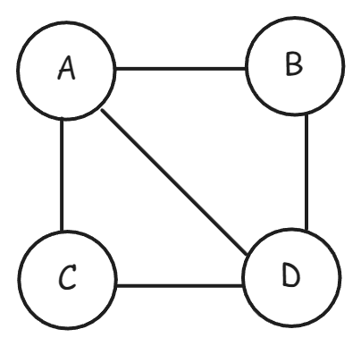
图5.1.1
图中每条边如果都有方向，则称该图为有向图，图中每条边如果都没有方向，则称该图为无向图。图5.1.2是无向图，图5.1.3是有向图。有向图中的边又叫做弧，图5.1.3中A到B有一条弧，记作<A,B>。带箭头的一端叫做弧头，不带箭头的一端叫做弧尾。无向图中的边都是双向的，图5.1.2中A到C有一条边相连，C到A也有一条边相连。记作(A,C)和(C,A)。
在无向图中与顶点相连的边的条数叫做顶点的度，在图5.1.2中与顶点A相连的边的条数是2，因此顶点A的度是2，在有向图中顶点发出的边的条数叫做边的出度，在有向图中指向顶点的边的条数叫做顶点的入度，图5.1.3中顶点B发出的边的条数是1，说明顶点B的出度是1，图5.1.3中指向顶点B的边的条数是1，说明顶点B的入度是1。
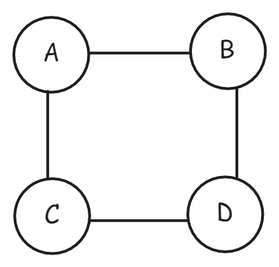
图5.1.2
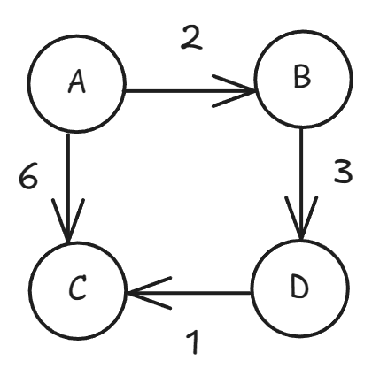
图5.1.3
在图中如果每条边都带有权值，则该图叫有权图，在图中如果每条边都不带权值，则该图叫无权图。图5.1.3中每条边都带有权值所以图5.1.3是有权图，图5.1.2中每条边都不带权值，因此图5.1.2是无权图。
路径是指图中从1个顶点到另外一个顶点所经过的边。路径长度是指图中从1个顶点到另外一个顶点所经过的边的权值之和。图5.1.3中从A到D需要经过两条边分别是<A,B>和<B,D>，因此从A到D的路径为<A,B>和<B,D>，路径长度为5。
在图中如果一条路径中第一个顶点和最后1个顶点相同则说明该图存在回路。图5.1.4中从A经过B经过D经过C最后到达A，这条路径中第一个顶点和最后1个顶点相同，所以图5.1.4存在回路。
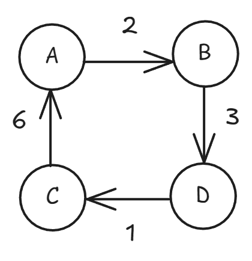
图5.1.4
5.2 通过数组创建图
图是由若干个顶点和若干条边组成的，如何通过数组创建图？可以定义两个数组，其中一个是一维数组用来存储图中各顶点的值，另外一个是二维数组用来存储边的信息。通过数组存储图，图的结构体代码中除了上面提到的两个数组，还需要定义一个变量vertexNum用来记录图的顶点数量，定义一个变量edgesNum用来记录图的边的条数。通过数组存储图，图的结构体代码如下：
typedef struct Graph{ //图的顶点数量 int vertexNum; //图的边的条数 int edgesNum; //顶点数组，存储顶点的值 char vertexs[MaxSize]; //边数组，存储边的信息 int edges[MaxSize][MaxSize];}Graph;
5.2.1 通过数组创建无向无权图
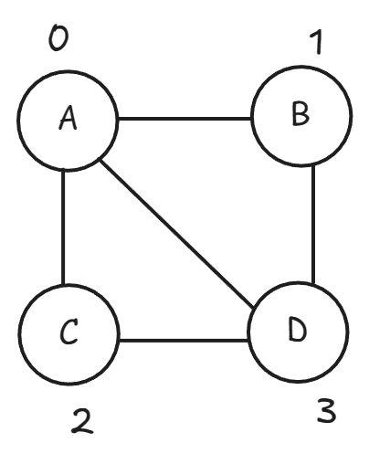
图5.2.1.1
图5.2.1.1是1个无向无权图，需要用两个数组存储图的有关信息，定义1个一维数组存储各顶点的值，这个一维数组叫做顶点数组，将各顶点的值存储到顶点数组中，可以定义1个for循环，遍历顶点数组，给顶点数组中的元素赋值，代码如下：
xxxxxxxxxx//给顶点数组中每一个元素赋值，循环次数是顶点个数for(int i=0;i<G.vertexNum;i++){ printf("输入第%d个顶点的值：",i+1); scanf(" %c",&G.vertexs[i]);}还需要定义1个二维数组记录顶点与顶点之间是否有边相连，这个二维数组叫做边数组edges，图5.2.1.1总共有4个顶点，边数组需要记录每个顶点与自身以及其他顶点之间是否有边相连。图5.2.1.1中有4个顶点，边数组需要记录顶点A与A，B，C，D之间是否有边相连。需要记录顶点B与A，B，C，D之间是否有边相连。需要记录顶点C与A，B，C，D之间是否有边相连。需要记录顶点D与A，B，C，D之间是否有边相连。那么这个边数组只能设置成4行4列总共可以存储16个元素。定义好的边数组如图5.2.1.2所示，初始情况下需要将边数组中每个元素的值设置为0。当图中的顶点个数为n时，边数组需要定义成n行n列。
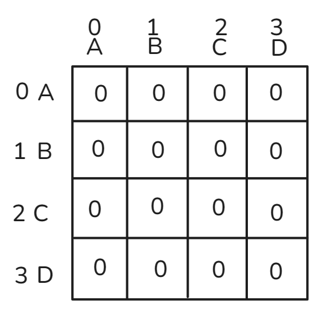
图5.2.1.2
边数组中的每一行可以用来记录顶点与自身以及其他顶点之间是否有边相连。边数组中的行号分别对应各顶点的下标，边数组的列号也分别对应各顶点的下标。行号与列号都从0开始计算。
接下来需要根据顶点与顶点之间是否有边相连来给边数组中的元素赋值，i和j都是顶点的下标，当下标为i的顶点到下标为j的顶点之间有边相连时，则令edges[ i ] [ j ] = 1，在无向图中由于边没有方向，顶点i到顶点j有边相连则顶点j到顶点i肯定有边相连，则令 edges[ j ] [ i ] = 1。根据这条规则将图5.2.1.2中的边数组进行修改，修改之后的边数组如图5.2.1.3所示。
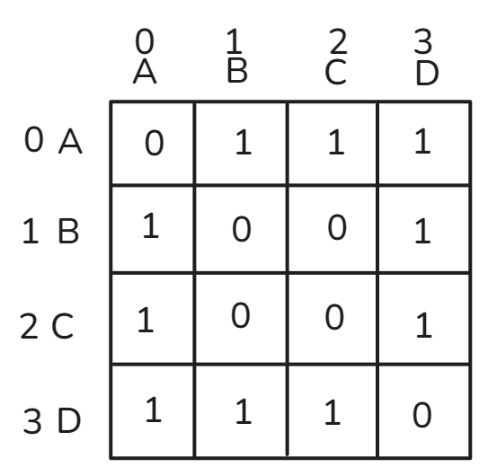
图5.2.1.3
定义1个for循环，for循环的次数等于边的条数，每次for循环在控制台输入有边相连的两个顶点的下标，这两个顶点的下标用i和j表示，代码如下：
xxxxxxxxxx//定义1个for循环，for循环的次数等于边的条数，每次for循环在控制台输入有边相连的两个顶点的下标for(int k=0;k<G.edgesNum;k++){ //i和j是有边相连的两个顶点的下标 int i,j; printf("输入有边相连的两个顶点的下标："); scanf("%d %d",&i,&j); //因为i到j有边相连，令edges[i][j] = 1 G.edges[i][j] = 1; //在无向图中i到j有边相连则j到i一定有边相连, 令edges[j][i] = 1 G.edges[j][i] = 1;} 创建无向无权图的完整代码如下：
xxxxxxxxxx//创建无向无权图void createUGraph(Graph &G){ //输入图的顶点个数 printf("输入图的顶点个数:"); scanf("%d",&G.vertexNum); //输入图的边的个数 printf("输入图的边的个数:"); scanf("%d",&G.edgesNum); //给顶点数组中每一个元素赋值，循环次数是顶点个数 for(int i=0;i<G.vertexNum;i++){ printf("输入第%d个顶点的值：",i+1); scanf(" %c",&G.vertexs[i]); } //边数组初始化，将边数组中每个元素的值设置为0 //边数组的行数等于顶点个数，列数等于顶点个数 for(int i=0;i<G.vertexNum;i++){ for(int j=0;j<G.vertexNum;j++){ G.edges[i][j] = 0; } } //定义1个for循环，for循环的次数等于边的条数，每次for循环在控制台输入有边相连的两个顶点的下标 for(int i=0;i<G.edgesNum;i++){ //i和j是有边相连的两个顶点的下标 int i,j; printf("输入有边相连的两个顶点的下标："); scanf("%d %d",&i,&j); //因为i到j有边相连，令edges[i][j] = 1 G.edges[i][j] = 1; //在无向图中i到j有边相连则j到i一定有边相连, 令edges[j][i] = 1 G.edges[j][i] = 1; } }创建完无向无权图之后需要遍历顶点数组和边数组，遍历数组的目的是为了验证图是否创建成功。
xxxxxxxxxx//遍历顶点数组和边数组void traverse(Graph G){ //遍历顶点数组 for(int i=0;i<G.vertexNum;i++){ printf("%c ",G.vertexs[i]); } printf("\n"); //遍历边数组 for(int j=0;j<G.vertexNum;j++){ for(int k=0;k<G.vertexNum;k++){ printf("%d ",G.edges[j][k]); } printf("\n"); }}在无向图中顶点的度是指与顶点相连的边的条数，在无向无权图中，求顶点的度需要先知道这个顶点的下标，假设顶点的下标是i，顶点的度等于第i行中1的个数，需要定义1个for循环遍历边数组中第i行，循环次数等于顶点个数，在for循环中统计第i行中1的个数。
求无向无权图中顶点的度代码如下：
xxxxxxxxxx//计算顶点的度,i是顶点的下标int vertexDegree(Graph G,int i){ //变量degree用来记录顶点的度 int degree = 0; //遍历边数组中第i行，统计第i行中1的个数，循环次数等于顶点个数 //j是边数组的列号 for(int j=0;j<G.vertexNum;j++){ if(G.edges[i][j]==1){ degree++; } } return degree;}
5.2.2 通过数组创建无向有权图
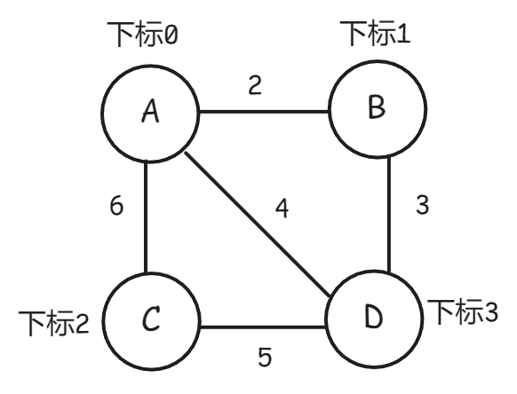
图5.2.2.1
图5.2.2.1是1个无向有权图，需要定义1个顶点数组存储顶点信息，顶点数组的创建同无向无权图，具体参见5.2.1小节，定义1个二维数组记录边的权值，这个二维数组叫做边数组edges，首先要对边数组初始化，顶点到自身无边相连边的权值设置为0，顶点到除自身以外的其他顶点的权值设置为无穷大，初始化之后的边数组如图5.2.2.2所示，用Inf表示无穷大。
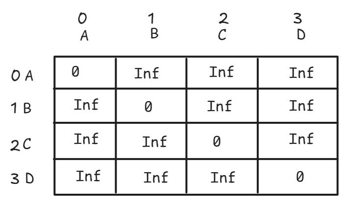
图5.2.2.2
接下来给边数组中的元素赋值，i和j都是顶点的下标，如果顶点i到顶点j之间有边相连并且边的权值等于w，则edges[ i ] [ j ] = w ，在无向图中由于边没有方向，如果顶点i到顶点j有边相连则顶点j到顶点i一定有边相连。则edges[ j ] [ i ] = w。根据这条规则将图5.2.2.2中的边数组进行修改，修改之后如图5.2.2.3所示。
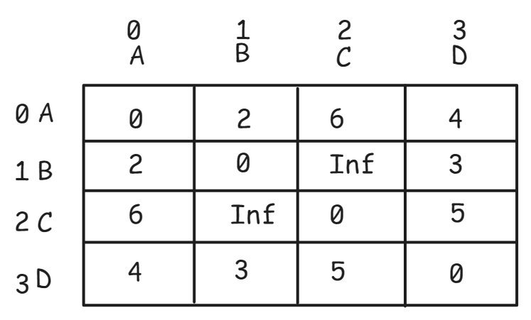
图5.2.2.3
可以定义1个for循环，for循环的次数等于边的条数，每次for循环在控制台输入有边相连的两个顶点的下标以及两个顶点之间边的权值，这两个顶点的下标用 i 和 j 表示，则edges[ i ] [ j ] = w edges[ j ] [ i ] =w，在无向图中如果 i 到 j 有边相连，则 j 到 i 也有边相连。代码如下：
xxxxxxxxxx//edgesNum是边的条数for(int k=0;k<G.edgesNum;k++){ //i和j是有边相连的两个顶点的下标,w是i到j的边的权值，w也是j到i的边的权值 int i,j,w; printf("输入有边相连的两个顶点的下标以及两个顶点之间边的权值："); scanf("%d %d %d",&i,&j,&w); //i到j有边相连，边的权值是w edges[i][j] = w; //j到i有边相连，边的权值是w edges[j][i] = w;} 通过数组创建无向有权图的代码如下所示：
xxxxxxxxxx//创建无向有权图void createUGraph(Graph &G){ //输入图的顶点个数 printf("输入图的顶点个数:"); scanf("%d",&G.vertexNum); //输入图的边的个数 printf("输入图的边的个数:"); scanf("%d",&G.edgesNum); //给顶点数组中每一个元素赋值 for(int i=0;i<G.vertexNum;i++){ printf("输入第%d个顶点的值：",i+1); scanf(" %c",&G.vertexs[i]); } //边数组初始化 for(int i=0;i<G.vertexNum;i++){ for(int j=0;j<G.vertexNum;j++){ //顶点到自身的边的权值设置为0 if(i==j){ G.edges[i][j] = 0; }else{ //顶点到除自身以外的顶点的边的权值设置为无穷大 G.edges[i][j] = Inf; } } } /*定义1个for循环，for循环的次数等于边的条数， 每次for循环在控制台输入有边相连的两个顶点的下标以及两个顶点之间边的权值 */ //edgesNum是边的条数 for(int k=0;k<G.edgesNum;k++){ //i和j是有边相连的两个顶点的下标,w是i到j的边的权值，w也是j到i的边的权值 int i,j,w; printf("输入有边相连的两个顶点的下标以及两个顶点之间边的权值："); scanf("%d %d %d",&i,&j,&w); //i到j有边相连，边的权值是w edges[i][j] = w; //j到i有边相连，边的权值是w edges[j][i] = w; } }在无向有权图中，假设顶点的下标为i，顶点i的度等于边数组中第i行非0和非无穷大的个数。在图5.2.2.3中顶点C的下标是2，顶点C的度等于边数组中第2行非0和非无穷大的个数，第2行非0和非无穷大的个数等于2，因此顶点C的度等于2。边数组的行号从0开始递增。 求无向有权图中顶点的度代码如下：
xxxxxxxxxx//计算顶点的度,i是顶点的下标int vertexDegree(Graph G,int i){ //变量degree用来记录顶点的度 int degree = 0; //遍历边数组中第i行，统计第i行中非Inf和非0的个数，循环次数等于顶点个数 //j是列号 for(int j=0;j<G.vertexNum;j++){ if(G.edges[i][j]!=Inf && G.edges[i][j]!=0){ degree++; } } return degree;}
5.2.3 通过数组创建有向无权图
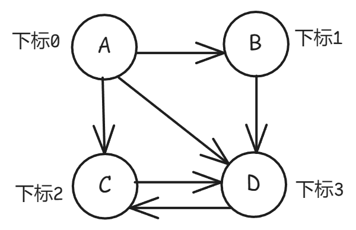
图5.2.3.1
图5.2.3.1是1个有向无权图，需要先定义1个顶点数组存储顶点信息，需要定义1个二维数组记录顶点与顶点之间是否有边相连，这个二维数组叫做边数组edges，首先要对边数组初始化，将边数组中所有元素的值设置为0。初始化之后边数组如图5.2.3.2所示。

图5.2.3.2
然后给边数组中的元素赋值，i和j都是顶点的下标，当顶点i到顶点j之间有边相连，则edges[ i ] [ j ] = 1 ，在有向图中边带方向，顶点i到顶点j如果有边相连，则顶点j到顶点i之间可能有边相连也可能无边相连。根据这个规则将图5.2.3.2中的边数组进行修改，修改之后如图5.2.3.3所示。
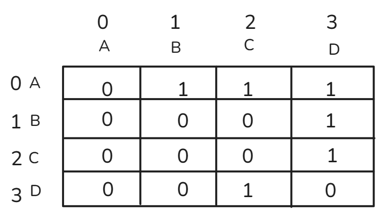
图5.2.3.3
通过数组创建有向无权图的代码如下：
xxxxxxxxxx//创建有向无权图void createUGraph(Graph &G){ //输入图的顶点个数 printf("输入图的顶点个数:"); scanf("%d",&G.vertexNum); //输入图的边的个数 printf("输入图的边的个数:"); scanf("%d",&G.edgesNum); //给顶点数组中每一个元素赋值，循环次数是顶点个数 for(int i=0;i<G.vertexNum;i++){ printf("输入第%d个顶点的值：",i+1); scanf(" %c",&G.vertexs[i]); } //边数组初始化，将边数组中每个元素的值设置为0 //边数组的行数等于顶点个数，列数等于顶点个数 for(int i=0;i<G.vertexNum;i++){ for(int j=0;j<G.vertexNum;j++){ G.edges[i][j] = 0; } } //定义1个for循环，for循环的次数等于边的条数，如果顶点i到顶点j有边相连则分别输入顶点i和顶点j的下标 //edgesNum是边的条数 for(int k=0;k<G.edgesNum;k++){ //i是弧尾端顶点的下标，j是弧头端顶点的下标 int i,j; printf("输入弧尾端顶点的下标和弧头端顶点的下标："); scanf("%d %d",&i,&j); /*在有向无权图中因为顶点i到j有边相连，则edges[i][j] = 1*/ G.edges[i][j] = 1; } } 图5.2.3.1是1个有向无权图，求每个顶点的入度和出度。入度是指向顶点的边的条数，在图5.2.3.1中，指向顶点B的边的条数是1，所以顶点B的入度是1。出度是从顶点发出的边的条数，从顶点A发出的边的条数是3，因此顶点A的出度是3。根据图5.2.3.1和图5.2.3.3可知： 下标为0的顶点A的出度是3，第0行中1的个数等于3， 下标为1的顶点B的出度是1，第1行中1的个数等于1， 下标为2的顶点C的出度是1，第2行中1的个数等于1， 下标为3的顶点D的出度是1，第3行中1的个数等于1。 总结：在有向无权图中下标为index的顶点的出度等于边数组中第index行中1的个数，需要定义1个for循环遍历第i行，循环次数等于顶点个数，在for循环中统计1的个数。
根据图5.2.3.1和图5.2.3.3可知： 下标为0的顶点A的入度是0，第0列中1的个数等于0， 下标为1的顶点B的入度是1，第1列中1的个数等于1， 下标为2的顶点C的入度是2，第2列中1的个数等于2， 下标为3的顶点D的入度是3，第3列中1的个数等于3。 总结：在有向无权图中下标为index的顶点的入度等于边数组中第index列中1的个数，需要定义1个for循环遍历第i列，循环次数等于顶点个数，在for循环中统计1的个数。
求有向无权图中顶点的入度和出度的代码如下：
x//计算顶点的入度,index是顶点的下标int vertexEnterDegree(Graph G,int index){ //变量enterDegree用来记录顶点的入度 int enterDegree = 0; //遍历边数组中第index列，统计第index列中1的个数，循环次数等于顶点个数 //i是行号，index是列号 for(int i=0;i<G.vertexNum;i++){ //元素的列号不变，行号每循环1次+1 if(G.edges[i][index]==1){ enterDegree++; } } return enterDegree;}
//计算顶点的出度,index是顶点的下标int vertexOutDegree(Graph G,int index){ //变量outDegree用来记录顶点的出度 int outDegree = 0; //遍历边数组中第index行，统计第index行中1的个数，循环次数等于顶点个数 //index是行号，i是列号 for(int i=0;i<G.vertexNum;i++){ //元素的行号不变，列号每循环1次+1 if(G.edges[index][i]==1){ outDegree++; } } return outDegree;}
5.2.4 通过数组创建有向有权图
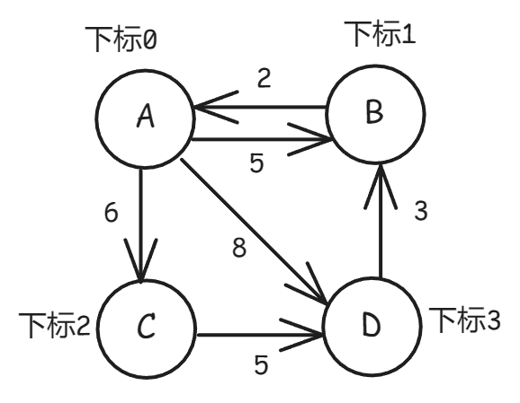
图5.2.4.1
图5.2.4.1是1个有向有权图，定义顶点数组存储顶点信息，定义1个二维数组存储边的权值，这个二维数组叫做边数组edges，首先要对边数组初始化，将顶点到自身的权值设置为0，将顶点到除自身以外的顶点的权值设置为无穷大，无穷大用Inf表示。Inf是单词Infinity的缩写，表示无穷大。初始化之后的边数组如图5.2.4.2所示。
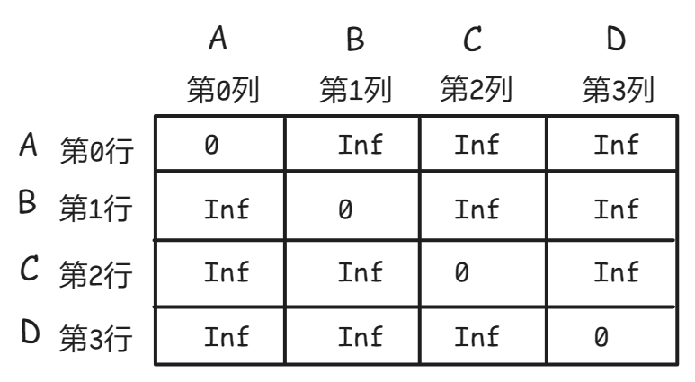
图5.2.4.2
接下来给边数组中的元素赋值，i和j都是顶点的下标，当下标为i的顶点到下标为j的顶点之间有边相连并且边的权值等于w，则edges[ i ] [ j ] = w ，在有向图中由于边有方向，如果顶点i到顶点j有边相连则顶点j到顶点i不一定有边相连。根据这个规则修改图5.2.4.2中的边数组，修改之后的边数组如图5.2.4.3所示。
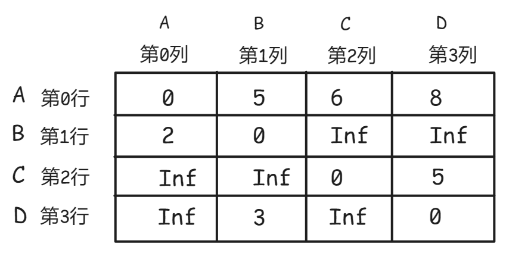
图5.2.4.3 通过数组创建有向有权图的代码如下：
xxxxxxxxxx//创建有向有权图void createGraph(Graph &G){ //输入图的顶点个数 printf("输入图的顶点个数:"); scanf("%d",&G.vertexNum); //输入图的边的个数 printf("输入图的边的个数:"); scanf("%d",&G.edgesNum); //给顶点数组中每一个元素赋值，循环次数是顶点个数 for(int i=0;i<G.vertexNum;i++){ printf("输入第%d个顶点的值：",i+1); scanf(" %c",&G.vertexs[i]); } //边数组初始化 //边数组的行数等于顶点个数，列数等于顶点个数 for(int i=0;i<G.vertexNum;i++){ for(int j=0;j<G.vertexNum;j++){ //顶点到自身的边的权值设置为0 if(i==j){ G.edges[i][j] = 0; }else{ //顶点到除自身以外的顶点的边的权值设置为无穷大 G.edges[i][j] = Inf; } } } //可以定义1个for循环，for循环的次数等于边的条数 //edgesNum是边的条数 for(int k=0;k<G.edgesNum;k++){ //i是弧尾端顶点的下标，j是弧头端顶点的下标,w是i到j的权值 int i,j,w; printf("输入弧尾端顶点的下标和弧头端顶点的下标以及边的权值："); scanf("%d %d %d",&i,&j,&w); //i到j有边相连，i到j的权值等于w G.edges[i][j] = w; } }图5.2.4.1是1个有向有权图，求每个顶点的入度和出度。入度是指向顶点的边的条数，图5.2.4.1中，指向顶点B的边的条数是2，所以顶点B的入度是2。出度是从顶点发出的边的条数，从顶点A发出的边的条数是3，因此顶点A的出度是3。根据图5.2.4.1和图5.2.4.3可知： 下标为0的顶点A的出度是3，第0行中非0非无穷的个数等于3 下标为1的顶点B的出度是1，第1行中非0非无穷的个数等于1 下标为2的顶点C的出度是1，第2行中非0非无穷的个数等于1 下标为3的顶点D的出度是1，第3行中非0非无穷的个数等于1 总结：在有向有权图中下标为index的顶点的出度等于边数组中第index行中非0非无穷的个数，需要定义1个for循环遍历第index行，循环次数等于顶点个数，在for循环中统计非0非无穷的个数。
下标为0的顶点A的入度是1，第0列中非0非无穷的个数等于1 下标为1的顶点B的入度是2，第1列中非0非无穷的个数等于2 下标为2的顶点C的入度是1，第2列中非0非无穷的个数等于1 下标为3的顶点D的入度是2，第3列中非0非无穷的个数等于2 总结：在有向有权图中下标为index的顶点的入度等于边数组中第index列中非0非无穷的个数，需要定义1个for循环遍历第index列，循环次数等于顶点个数，在for循环中统计非0非无穷的个数。
求有向有权图中顶点的入度和出度的代码如下：
xxxxxxxxxx//计算顶点的入度,index是顶点的下标int vertexEnterDegree(Graph G,int index){ //变量enterDegree用来记录顶点的入度 int enterDegree = 0; //遍历边数组中第index列，统计第index列中非0非无穷的个数，循环次数等于顶点个数，i表示行号index表示列号 for(int i=0;i<G.vertexNum;i++){ //元素的列号不变，行号每循环1次+1 if(G.edges[i][index]!=Inf && G.edges[i][index]!=0){ enterDegree++; } } return enterDegree;}
//计算顶点的出度,index是顶点的下标int vertexOutDegree(Graph G,int index){ //变量outDegree用来记录顶点的出度 int outDegree = 0; //遍历边数组中第index行，统计第index行中非0非无穷的个数，循环次数等于顶点个数，index表示行号i表示列号 for(int i=0;i<G.vertexNum;i++){ //元素的行号不变，列号每循环1次+1 if(G.edges[i][index]!=Inf && G.edges[i][index]!=0){ outDegree++; } } return outDegree;}5.3 通过数组+链表创建图
5.3.1 通过数组+链表创建无向图
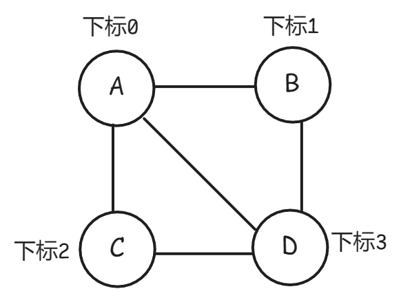
图5.3.1.1
图5.3.1.1是1个无向无权图，需要定义1个顶点数组存储顶点信息，顶点数组中存储顶点结点，顶点结点用结构体来表示，每个顶点结点由两个部分组成，分别是数据域和指针域。数据域用来存储顶点的值，指针域用来存储第一个边结点的地址。
边结点存储顶点发出的边的信息，边结点用结构体来表示，每个边结点包括两个部分分别是数据域和指针域。数据域用来存储顶点发出的边所指向的顶点的下标，指针域用来存储下一个边结点的地址。
如图5.3.1.2所示，定义1个顶点数组存储顶点结点，顶点数组中下标为0的结点存储图5.3.1.1中顶点A的信息，其中数据域存储顶点的值，指针域存储第一个边结点的地址。至于每个边结点存储哪条边的信息可以随意。下图中的第一个边结点存储顶点A到顶点B的边的信息。因此第一个边结点的数据域存储顶点B的下标，第一个边结点的指针域存储下一个边结点的地址。第二个边结点存储顶点A到顶点C的边的信息。第二个边结点的数据域存储顶点C的下标，第二个边结点的指针域存储下一个边结点的地址。第三个边结点存储顶点A到顶点D的边的信息。第三个边结点的数据域存储顶点D的下标，第三个边结点的指针域存储下一个边结点的地址。因为由顶点A发出的边总共3条，所以需要创建3个边结点，第3个边结点的指针域为NULL。顶点结点与后面的若干个边结点组成了1个单链表，顶点结点可以看作这个单链表的头结点。
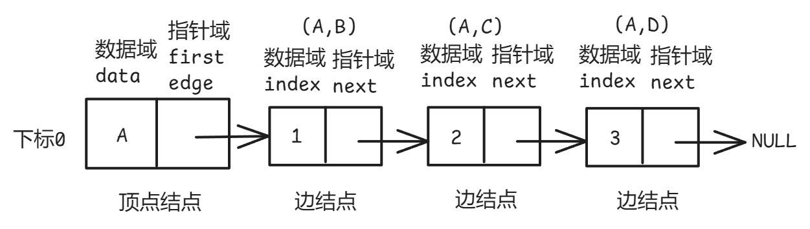
图5.3.1.2
使用数组+链表创建图5.3.1.1中的无向图，如图5.3.1.3所示。
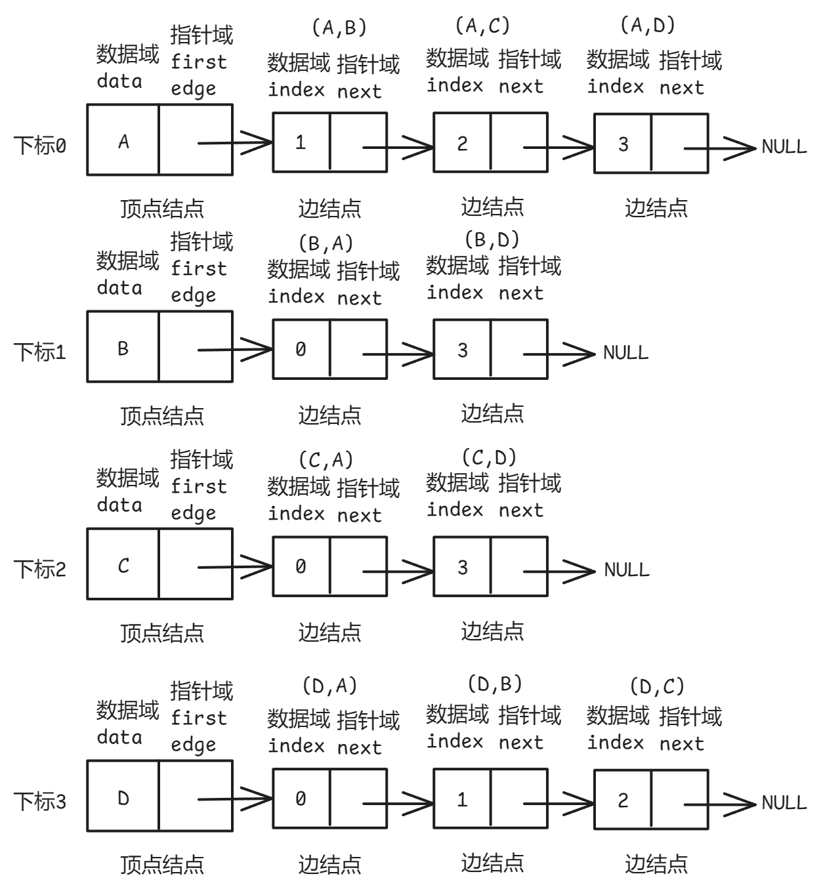
图5.3.1.3
通过数组+链表创建图的结构体定义代码如下：
xxxxxxxxxx//定义边结点存储边的信息typedef struct EdgeNode{ //数据域存储顶点发出的边所指向顶点的下标 int index; //指针域存储下一个边结点的地址，next指向下一个边结点 EdgeNode* next;}EdgeNode;
//定义顶点结点存储顶点信息typedef struct VNode{ //数据域存储顶点的值 char data; //指针域存储第一个边结点的地址，firstEdge指向第一个边结点 EdgeNode* firstEdge;}VNode;
//定义图typedef struct Graph{ //图的顶点个数 int vertexNum; //图的边的数量 int edgesNum; //顶点数组存储顶点结点,顶点数组是结构体数组 VNode vertexs[MaxSize];}Graph;图5.3.1.1是1个无向无权图，需要定义1个顶点数组vertexs[ ]存储各顶点结点。通过for循环给顶点数组中每个结点赋值，代码如下。
xxxxxxxxxx //给顶点数组中每一个元素赋值，循环次数是顶点个数for(int i=0;i<G.vertexNum;i++){ printf("输入第%d个顶点的值：",i+1); //给每个顶点结点的数据域赋值 scanf(" %c",&G.vertexs[i].data); //给每个顶点结点的指针域赋值，此时边结点未创建因此所有顶点结点的firstEdge赋值为NULL G.vertexs[i].firstEdge=NULL; }给顶点数组中每个结点赋值之后各顶点结点如图5.3.1.4所示。
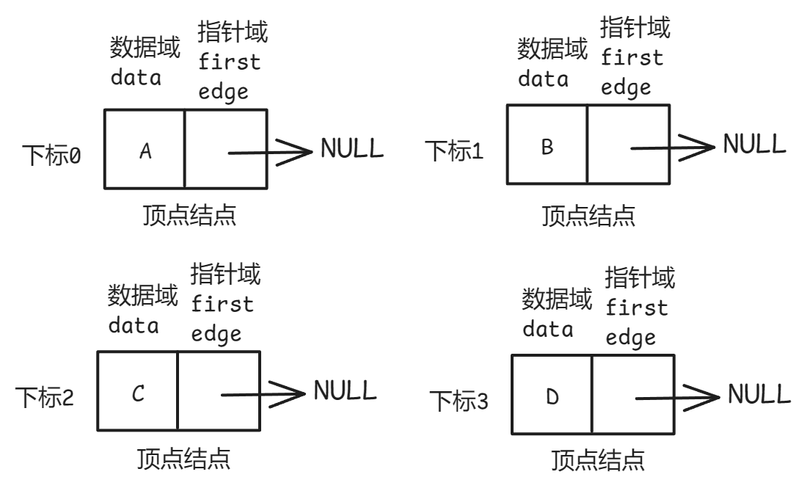
图5.3.1.4
创建边结点，每次创建的边结点插入在顶点结点的后面。定义1个for循环创建边结点，for循环的次数等于图中边的条数。代码如下：
xxxxxxxxxx/*可以定义1个for循环，for循环的次数等于边的条数*/ //edgesNum表示边的条数 for(int k=0;k<G.edgesNum;k++){ //i和j是有边相连的两个顶点的下标 //下标为i的顶点用v1表示，下标为j的顶点用v2表示 int i,j; printf("输入有边相连的两个顶点的下标："); scanf("%d %d",&i,&j); .... }在图5.3.1.1中A发出的边有3条，定义1个边结点存储边(A，B)的信息，图5.3.1.5中用i表示顶点A的下标，j表示顶点B的下标，创建边结点p存储边(A，B）的信息，边结点p的数据域index等于顶点B的下标，伪代码如下： //创建边结点p存储A到B的边的信息 p = new EdgeNode； //边结点p的数据域等于B的下标 p->index = j;
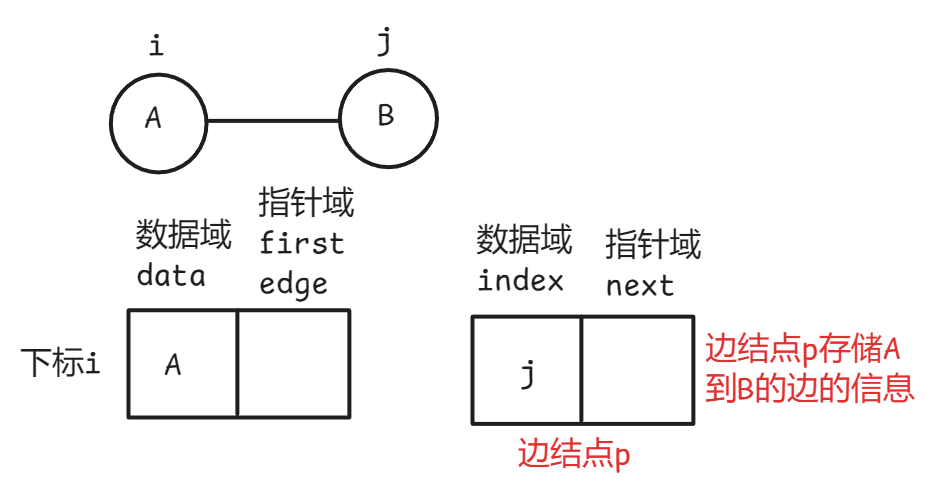
图5.3.1.5
//边结点p插入在顶点结点A的后面，在边结点p插入之前，先获取顶点A的后继结点q。 q = vertexs[ i ].firstedge;
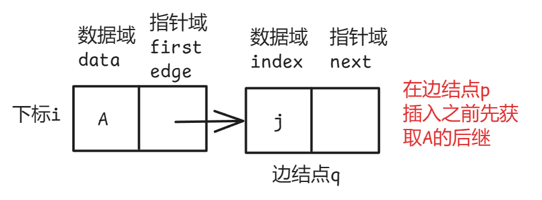
图5.3.1.6
//顶点A的firstedge指向边结点p，边结点p插入在A的后面，如图5.3.1.7所示 vertexs[ i ].firstedge = p; //边结点p的next指针指向边结点q，如图5.3.1.7所示 p->next = q;
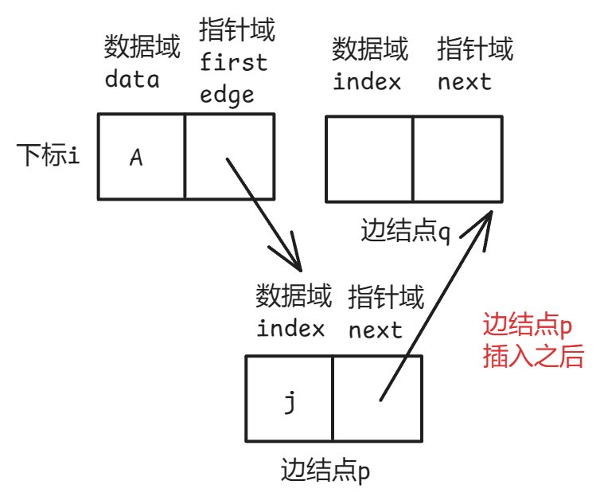
图5.3.1.7
下图中用i表示顶点A的下标，j表示顶点B的下标，创建边结点r存储边(B，A)，边结点r的数据域等于A的下标，如图5.3.1.8所示，伪代码如下： //创建边结点r存储边(B，A) r = new EdgeNode； //边结点r的数据域等于v1的下标 r->index = i;
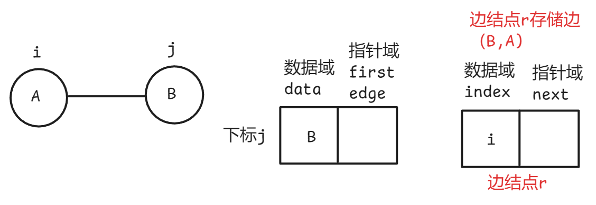
图5.3.1.8
//边结点r插入在顶点B的后面，在边结点r插入之前，先获取顶点B的后继结点s，如图5.3.1.9所示，伪代码如下： s = vertexs[ j ].firstedge;
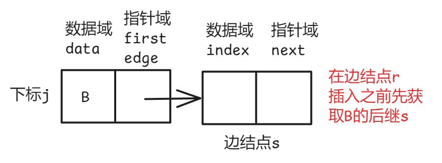
图5.3.1.9
//顶点B的firstedge指向边结点r，如图5.3.1.10所示 vertexs[ j ].firstedge = r; //边结点r的next指针指向边结点s，如图5.3.1.10所示 r->next = s;
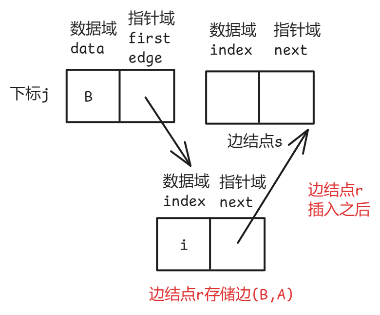
图5.3.1.10
数组+链表创建无向图的代码如下：
xxxxxxxxxx//创建无向图void createGraph(Graph &G){ //输入图的顶点个数 printf("输入图的顶点个数:"); scanf("%d",&G.vertexNum); //输入图的边的个数 printf("输入图的边的个数:"); scanf("%d",&G.edgesNum); //给顶点数组中每一个元素赋值，循环次数是顶点个数 for(int i=0;i<G.vertexNum;i++){ printf("输入第%d个顶点的值：",i+1); //给每个顶点结点的数据域赋值 scanf(" %c",&G.vertexs[i].data); //给每个顶点结点的指针域赋值，此时边结点未创建因此所有顶点结点的firstEdge赋值为NULL G.vertexs[i].firstEdge=NULL; } /*可以定义1个for循环，for循环的次数等于边的条数*/ //edgesNum表示边的条数 for(int k=0;k<G.edgesNum;k++){ //i和j是有边相连的两个顶点的下标 //下标为i的顶点用A表示，下标为j的顶点用B表示 int i,j; printf("输入有边相连的两个顶点的下标："); scanf("%d %d",&i,&j); //创建边结点p存储A到B的边的信息 EdgeNode* p = new EdgeNode; //边结点p的数据域等于v2的下标 p->index = j; /*边结点p插入在顶点结点A的后面，在边结点p插入之前，先获取顶点A的后继结点q*/ EdgeNode* q = G.vertexs[i].firstEdge; /*顶点A的firstEdge指向边结点p,边结点p插入在A的后面*/ G.vertexs[i].firstEdge = p; //边结点p的next指针指向边结点q p->next = q; /* 以上我们创建了边结点p存储A到B的边的信息， 在无向图中A到B有边相连则B到A一定有边相连， 那么还需要创建1个边结点存储B到A的边的信息 */ //创建边结点r存储B到A的边的信息 EdgeNode* r = new EdgeNode; //边结点r的数据域等于A的下标 r->index = i; /*边结点r插入在顶点B的后面，在边结点r插入之前，先获取顶点B的后继结点s*/ EdgeNode* s = G.vertexs[j].firstEdge; //顶点B的firstEdge指向边结点r G.vertexs[j].firstEdge = r; //边结点r的next指针指向边结点s r->next = s; }}根据图5.3.1.3画出的数组和链表，可以发现与顶点A相连的边的条数等于3，顶点A后面的边结点的数量是3，与顶点B相连的边的条数等于2，顶点B后面的边结点的数量是2，由此可以得出结论：通过数组+链表创建的无向图中顶点的度等于顶点后面边结点的数量。
通过数组+链表创建的无向图中求顶点的度的代码如下：
xxxxxxxxxx//计算顶点的度,i是顶点的下标//如何计算下标为i的顶点的度？需要统计下标为i的顶点后面的边结点的数量int degree(Graph G,int i){ //变量degree用来记录顶点的度 int degree = 0; //获取下标为i的顶点的后继结点，后继结点是第1个边结点 EdgeNode* p = G.vertexs[i].firstEdge; //通过while循环统计下标为i的顶点后面的边结点的数量 while(p!=NULL){ //如果p不等于NULL说明边结点存在，degree+1记录边结点的数量 degree++; //p指向下一个边结点 p = p->next; } return degree;}5.3.2 通过数组+链表创建有向图
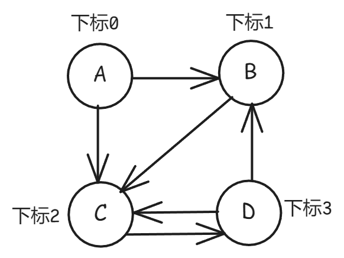
图5.3.2.1
图5.3.2.1是1个有向图，需要定义1个顶点数组存储顶点信息，顶点数组中存储顶点结点，顶点结点用结构体来表示，每个顶点结点由两个部分组成，分别是数据域和指针域。数据域用来存储顶点的值，指针域用来存储第一个边结点的地址。
边结点存储顶点发出的边的信息，边结点用结构体来表示，每个边结点包括两个部分分别是数据域和指针域。数据域用来存储顶点发出的边所指向的顶点的下标，指针域用来存储下一个边结点的地址。
如图5.3.2.2所示，定义1个顶点数组存储图5.3.2.1中的顶点，顶点数组中下标为0的结点存储顶点A的信息，其中数据域存储顶点的值A，指针域存储第一个边结点的地址。至于每个边结点存储哪条边的信息可以随意。下图中的第一个边结点存储顶点A到顶点B的边的信息。因此第一个边结点的数据域存储顶点B的下标，第一个边结点的指针域存储下一个边结点的地址。第二个边结点存储顶点A到顶点C的边的信息。第二个边结点的数据域存储顶点C的下标，第二个边结点的指针域存储下一个边结点的地址。因为由顶点A发出的边总共2条，所以需要创建2个边结点，第2个边结点的指针域为NULL。
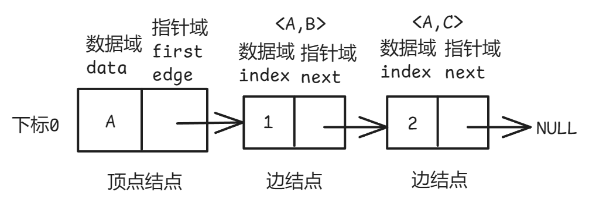
图5.3.2.2
每个顶点结点与后面的若干个边结点组成了1个单链表，顶点结点可以看作这个单链表的头结点。使用数组+链表创建图5.3.2.1中的有向图，如图5.3.2.3所示。
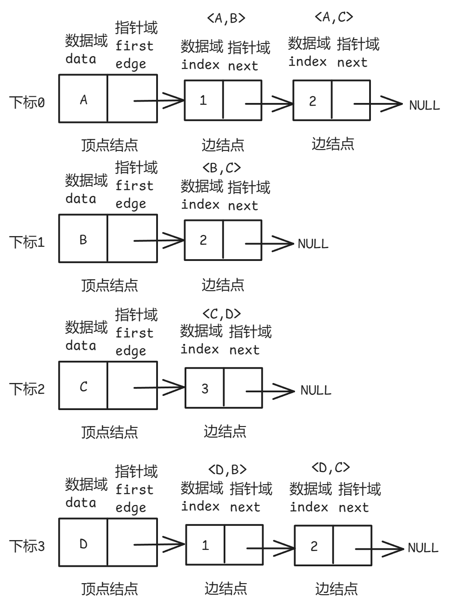
图5.3.2.3
通过数组+链表创建有向图，需要创建1个顶点数组存储顶点信息然后给顶点数组中每个元素赋值，具体参见5.3.1小节。
xxxxxxxxxx/*可以定义1个for循环，for循环的次数等于边的条数*/ //edgesNum表示边的条数 for(int k=0;k<G.edgesNum;k++){ //弧尾端顶点的下标是i，弧头端顶点的下标是j //假设顶点A的下标用i表示，顶点B的下标用j表示 int i,j; printf("如果顶点到顶点之间有边相连，请输入弧尾端顶点和弧头端顶点的下标："); scanf("%d %d",&i,&j); ..... }下图中用i表示顶点A的下标，j表示顶点B的下标，创建边结点p存储A到B的边的信息，边结点p的数据域等于B的下标。 //创建边结点p存储A到B的边的信息，如图5.3.2.4所示。 p = new EdgeNode; //边结点p的数据域等于B的下标，如图5.3.2.4所示。 p->index = j;
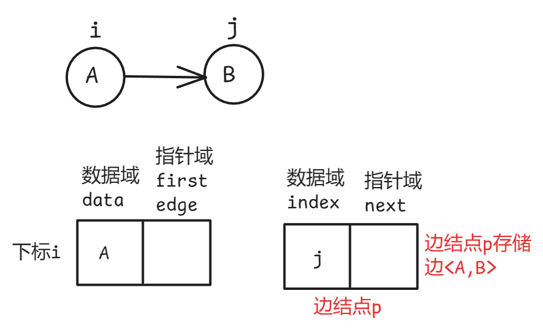
图5.3.2.4
//边结点p插入在顶点A的后面，在边结点p插入之前，先获取顶点A的后继结点q，如图5.3.2.5所示。 q = vertexs[ i ].firstedge;
图5.3.2.5
//顶点A的firstedge指向边结点p，边结点p插入在顶点A的后面，如图5.3.2.6所示。 vertexs[ i ].firstedge = p; //边结点p的next指针指向边结点q，如图5.3.2.6所示。 p->next = q;
图5.3.2.6
数组+链表创建有向图的代码如下：
xxxxxxxxxx//创建有向图void createGraph(Graph &G){ //输入图的顶点个数 printf("输入图的顶点个数:"); scanf("%d",&G.vertexNum); //输入图的边的个数 printf("输入图的边的个数:"); scanf("%d",&G.edgesNum); //给顶点数组中每一个元素赋值，循环次数是顶点个数 for(int i=0;i<G.vertexNum;i++){ printf("输入第%d个顶点的值：",i+1); //给每个顶点结点的数据域赋值 scanf(" %c",&G.vertexs[i].data); //给每个顶点结点的指针域赋值，此时边结点未创建因此所有顶点结点的firstEdge赋值为NULL G.vertexs[i].firstEdge=NULL; } /*可以定义1个for循环，for循环的次数等于边的条数*/ //edgesNum表示边的条数 for(int k=0;k<G.edgesNum;k++){ //弧尾端顶点的下标是i，弧头端顶点的下标是j //假设顶点A的下标用i表示，顶点B的下标用j表示 int i,j; printf("如果顶点到顶点之间有边相连，请输入弧尾端顶点和弧头端顶点的下标："); scanf("%d %d",&i,&j); //创建边结点p存储A到B的边的信息 EdgeNode* p = new EdgeNode; //边结点p的数据域等于B的下标 p->index = j; /*边结点p插入在顶点结点A的后面，在边结点p插入之前，先获取顶点A的后继结点q*/ EdgeNode* q = G.vertexs[i].firstEdge; /*顶点A的firstEdge指向边结点p,边结点p插入在顶点A的后面*/ G.vertexs[i].firstEdge = p; //边结点p的next指针指向边结点q p->next = q; }}在通过数组+链表创建的有向图中如何求顶点的入度和出度？在有向图中顶点的出度就是顶点发出的边的条数，顶点的入度是指向顶点的边的条数。
根据图5.3.2.3画出的数组和链表，可以发现顶点A发出的边的条数等于2，顶点A后面的边结点的数量是2，顶点B发出的边的条数等于1，顶点B后面的边结点的数量是1，由此可以得出结论：通过数组+链表创建的有向图中顶点的出度等于顶点后面边结点的数量。
根据图5.3.2.3画出的数组和链表，可以发现指向下标为2的顶点C的边的条数等于3，所有的边结点中数据域为2的边结点的数量等于3。指向下标为1的顶点B的边的条数等于2，所有的边结点中数据域为1的边结点的数量等于2。由此可以得出结论：在有向图中假设i是要计算入度的顶点的下标，遍历所有的边结点统计边结点的数据域等于i的数量，数据域等于i的数量就是下标为i的顶点的入度。
在通过数组+链表创建的有向图中求顶点的入度和出度的代码如下：
xxxxxxxxxx//计算顶点的出度,i是顶点的下标//如何计算下标为i的顶点的出度？需要统计下标为i的顶点后面的边结点的数量int vertexOutDegree(Graph G,int i){ //变量outDegree用来记录顶点的出度 int outDegree = 0; //获取下标为i的顶点的后继结点，后继结点是第1个边结点 EdgeNode* p = G.vertexs[i].firstEdge; //通过while循环统计下标为i的顶点后面的边结点的数量 while(p!=NULL){ //如果p不等于NULL说明边结点存在，outDegree记录边结点的数量 outDegree++; //p指向下一个边结点 p = p->next; } return outDegree;}
//计算顶点的入度,i是要计算入度的顶点的下标//遍历所有的边结点统计边结点的数据域等于i的数量，数据域等于i的数量就是下标为i的顶点的入度int vertexEnterDegree(Graph G,int i){ //变量enterDegree用来记录顶点的入度 int enterDegree = 0; //遍历顶点数组,循环次数等于顶点个数 for(int j=0;j<G.vertexNum;j++){ //获取顶点结点的后继结点，后继结点是第1个边结点 EdgeNode* p = G.vertexs[j].firstEdge; /*通过while循环遍历边结点统计边结点的数据域等于i的数量， 当p为NULL时说明以某个顶点为头结点的单链表遍历完了， 此时while循环结束,继续下一趟for循环*/ while(p!=NULL){ //如果边结点的数据域等于i则enterDegree+1 if(p->index==i){ enterDegree++; } //p指向下一个边结点 p = p->next; } } return enterDegree;}5.4 深度优先遍历
5.4.1 深度优先遍历的思想
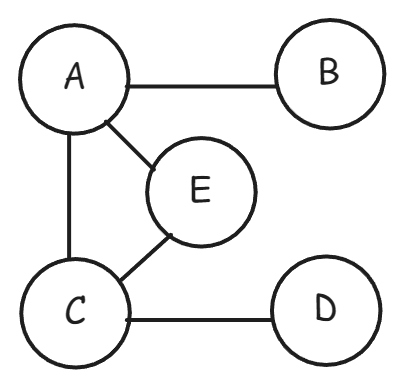
图5.4.1.1
图的遍历指的是将图中所有的顶点都访问一遍，并且每个顶点只访问一次。图的遍历方法包括深度优先遍历(DFS)和广度优先遍历(BFS)，图5.4.1.1是1个无向图，使用深度优先遍历这个图，任取图中的顶点A作为起始顶点，访问顶点A，访问A的相邻顶点B，接着访问B的相邻顶点，由于B的相邻顶点都访问过了，所以回退到上一个访问过的顶点A，接着访问A的相邻顶点C，接着访问C的相邻顶点E，接着访问E的相邻顶点，由于E的相邻顶点A和C都访问过了，因此回退到上一个访问过的顶点C，接着访问C的相邻顶点D，到此图5.4.1.1中所有的顶点都访问过了，图5.4.1.1中深度优先遍历的顺序为：A->B->C->E->D。
图的创建方式分为数组创建和数组+链表创建，如果没有指定图的创建方式以及图中顶点的下标和起始顶点，深度优先遍历的结果不是唯一的。在图5.4.1.1中，任取图中的顶点A作为起始顶点，访问顶点A，访问A的相邻顶点B，访问B的相邻顶点，因为B的相邻顶点A访问过了，因此回退到上一个访问过的顶点A，访问A的相邻顶点E，访问E的相邻顶点C，访问C的相邻顶点D，到此图5.4.1.1中所有的顶点都访问过了，图5.4.1.1中深度优先遍历的顺序为：A->B->E->C->D。
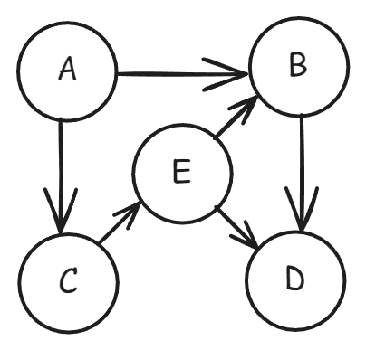
图5.4.1.2
在图5.4.1.2的有向图中，取图中的顶点A作为起始顶点，访问顶点A，访问A的相邻顶点B，访问B的相邻顶点D，访问D的相邻顶点，此时D没有相邻顶点，回退到上一个访问过的顶点B，访问B的相邻顶点，此时B的相邻顶点D已经访问过了，回退到上一个访问过的顶点A，访问A的相邻顶点C，访问C的相邻顶点E。到此有向图中所有的顶点都访问过了，图5.4.1.2中深度优先遍历的顺序为：A->B->D->C->E。
图5.4.1.2是一个有向图，使用深度优先遍历这个有向图，起始顶点只能选择入度为0的顶点，因为只有选择入度为0的顶点才可以访问完图中所有的顶点，图5.4.1.2中如果选择B作为起始顶点，先访问B，然后访问B的相邻顶点D，再访问D的相邻顶点，由于D没有相邻顶点需要回退到上一个访问过的顶点B，因为B的相邻顶点都访问过了，需要回退到上一个访问过的顶点，由于B是第一个访问过的顶点无法回退，导致遍历无法进行下去。图5.4.1.2中入度为0的顶点是A，因此只能将A作为起始顶点。
深度优先遍历的过程：（1）任取图中的1个顶点v1为起始顶点，访问顶点v1，然后访问顶点v1的相邻顶点v2，然后访问v2的相邻顶点v3，然后访问v3的相邻顶点v4...如果当前访问到的顶点v4的相邻顶点都访问过了或者当前访问到的顶点v4没有相邻顶点，则需要退回到上一个访问过的顶点v3，然后继续访问v3的相邻顶点v5，这样循环往复直到图中所有的顶点都访问完毕。在有向图和无向图中顶点v发出的边所指向的顶点是顶点v的相邻顶点。
5.4.2 通过数组创建的图的深度优先遍历
通过数组创建图，并且指定这个图的起始顶点，那么这个图的深度优先遍历的结果就是唯一的。通常将下标为0的顶点作为起始顶点。
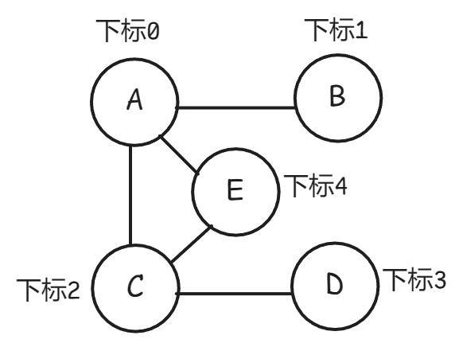
图5.4.2.1
图5.4.2.1是1个无向图，使用数组方式创建这个图，定义1个二维数组表示顶点与顶点之间是否有边相连，画出的二维数组如图5.4.2.2所示，这个二维数组叫做边数组。
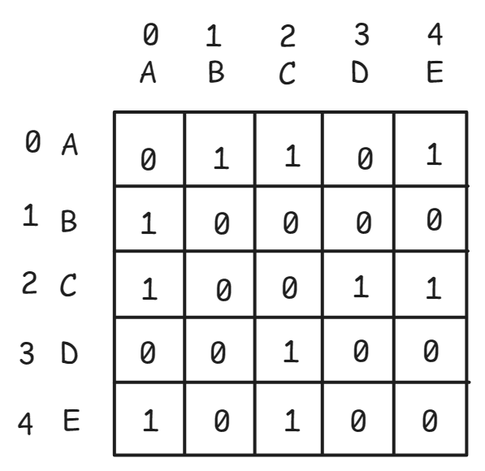
图5.4.2.2
定义1个数组visit[ ]用来标记各个顶点是否已经访问过，初始情况下将visit[ ]中每个元素都设置为0，用visit数组中元素的下标表示各顶点的下标。如果下标为i的顶点访问过了，则visit[ i ]等于1，如果下标为i的顶点没有访问过，则visit[ i ]等于0，visit数组初始化之后如图5.4.2.3所示。
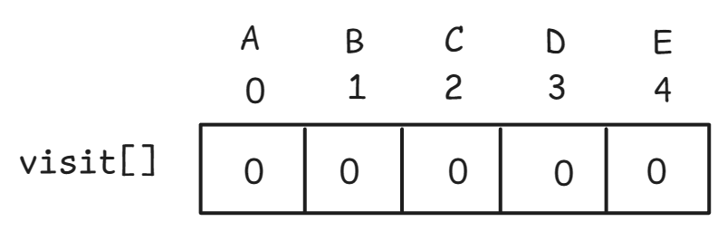
图5.4.2.3
使用深度优先搜索遍历图5.4.2.1中的无向图，将顶点A作为起始顶点，访问顶点A，设置visit[0] = 1，将A标记为已访问，然后遍历边数组第0行访问A的相邻顶点，发现与A相邻的顶点B未访问，接着访问顶点B，设置visit[1] = 1，将B标记为已访问。此时深度优先遍历序列为：A->B
接着遍历边数组中第1行访问B的相邻顶点，发现与B相邻的顶点A访问过了，此时需要退回到上一个访问到的顶点A。
接着遍历边数组中第0行访问A的相邻顶点，发现与A相邻的顶点C未访问，访问顶点C，设置visit[2]=1，将C标记为已访问。此时深度优先遍历序列为：A->B->C
接着遍历边数组中第2行访问C的相邻顶点，发现与C相邻的顶点D未访问，访问顶点D，设置visit[3]=1，将D标记为已访问。此时深度优先遍历序列为：A->B->C->D
接着遍历边数组中第3行访问D的相邻顶点，发现与D相邻的顶点C访问过了，此时需要退回到上一个访问到的顶点C。
接着遍历边数组中第2行访问C的相邻顶点，发现与C相邻的顶点E未访问，访问顶点E，设置visit[4]=1，将E标记为已访问。此时深度优先遍历序列为：A->B->C->D->E
到此图中所有顶点都访问过了深度优先搜索遍历结束。深度优先搜索遍历的结果为：A->B->C->D->E
通过数组创建的图的深度优先搜索遍历代码如下：
xxxxxxxxxx//visit数组用来标记顶点是否被访问过，如果被访问过则元素标记为1，没有被访问过则元素标记为0int visit[MaxSize];
//深度优先搜索遍历void DFS(Graph G,int i){ //访问下标为i的顶点，将下标为i的顶点标记为已访问 printf("%c ",G.vertexs[i]); visit[i] =1; //遍历边数组第i行，如果发现顶点i的相邻顶点j未被访问，则递归调用DFS访问顶点j //i和j都是顶点的下标 for(int j=0;j<G.vertexNum;j++){ //无向图中如果edges[i][j]==1说明i到j有边相连，j是i的相邻顶点 if(G.edges[i][j]==1 && visit[j]==0){ DFS(G,j); } }}定义函数DFS(G,i)进行深度优先搜索遍历，其中G表示需要遍历的图，i表示当前访问到的顶点的下标，j用来表示i的相邻顶点。使用深度优先遍历图5.4.2.1中的无向图，图5.4.2.1中的无向图使用数组方式创建，假设第1个访问到的顶点是A，A是起始顶点，递归执行流程如图5.4.2.4所示：
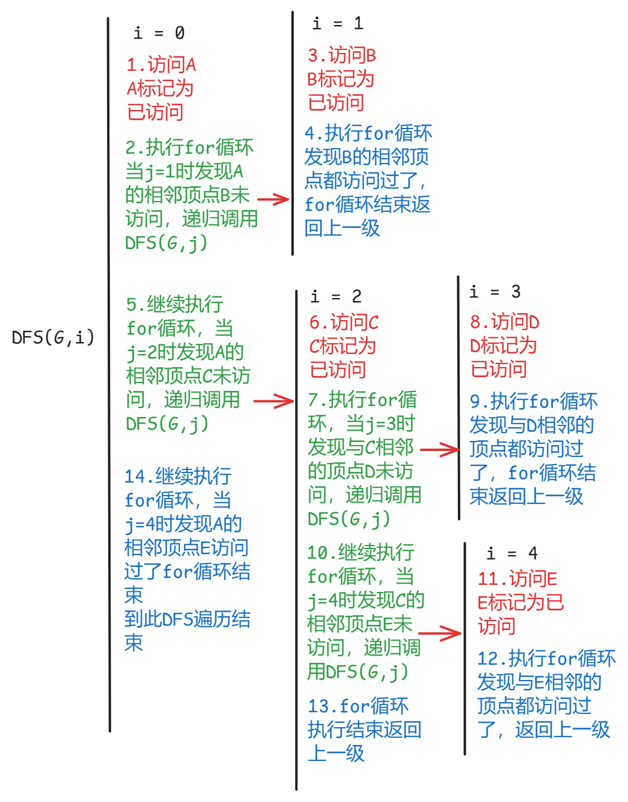
图5.4.2.4
在深度优先遍历递归执行过程中，当for循环结束时，这一层递归就结束了，递归结束的条件是for循环结束。
5.4.3 通过数组+链表创建的图的深度优先搜索遍历
通过数组+链表的方式创建图5.4.2.1中的无向图，可以画出图5.4.3.1中的数组和链表。
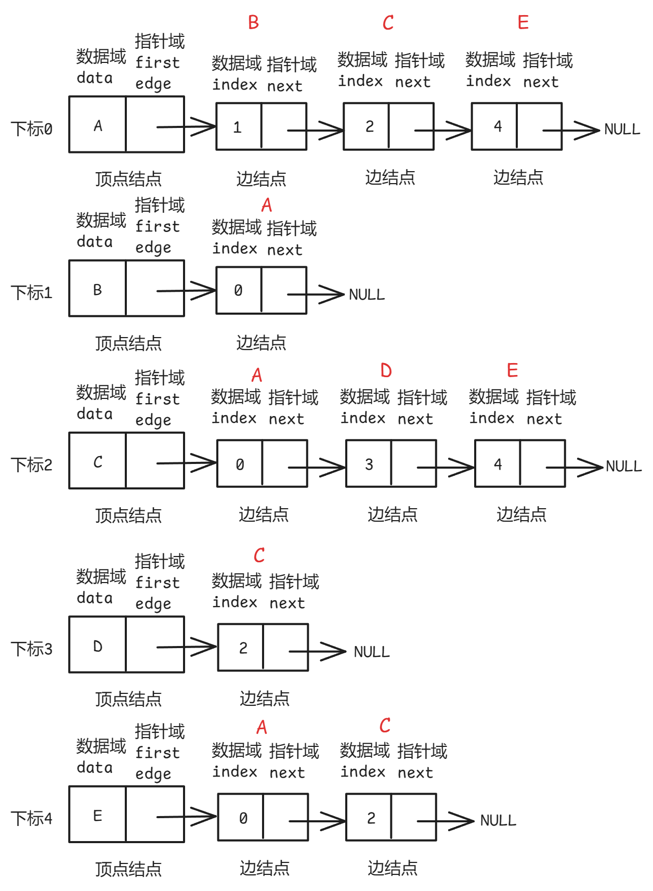
图5.4.3.1
定义1个数组visit[ ]用来标记各个顶点是否已经访问过，初始情况下将visit[ ]中每个元素都设置为0，用visit数组中元素的下标表示各顶点的下标。如果下标为i的顶点访问过了，则visit[ i ]等于1，如果下标为i的顶点没有访问过，则visit[ i ]等于0，visit数组初始化之后如图5.4.2.3所示。
图5.4.2.3
遍历某个顶点的相邻顶点，需要先获取该顶点的后继结点也就是第一个边结点，如图5.4.3.2所示，需要遍历以顶点A为头结点的单链表，顶点A的下标是i，先获取顶点A的后继结点p。p指向第一个边结点。 p = G.vertexs[ i ].firstEdge;
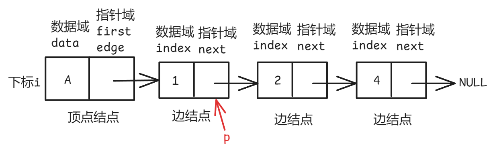
图5.4.3.2
此时p指向单链表中第一个边结点，需要定义1个while循环，每循环1次p向后移动1个位置，通过j = p->index可以获取顶点A的相邻顶点的下标，如果visit[ j ]等于0说明顶点A的相邻顶点未访问，如果visit[ j ]等于1说明顶点A的相邻顶点访问过了。在通过数组+链表创建的图中，边结点的数据域index等于各顶点的相邻顶点的下标。
使用深度优先搜索遍历图5.4.2.1中的无向图，将顶点A作为起始顶点，访问顶点A，设置visit[0] = 1，将A标记为已访问，然后遍历以顶点A为头结点的单链表访问A的相邻顶点，发现与A相邻的顶点B未访问，接着访问顶点B，设置visit[1] = 1，将B标记为已访问。此时深度优先遍历序列为：A->B。
接着遍历以顶点B为头结点的单链表访问B的相邻顶点，发现与B相邻的顶点A访问过了，此时需要退回到上一个访问到的顶点A。
接着遍历以顶点A为头结点的单链表访问A的相邻顶点，发现与A相邻的顶点C未访问，访问顶点C，设置visit[2]=1，将C标记为已访问。此时深度优先遍历序列为：A->B->C。
接着遍历以顶点C为头结点的单链表访问C的相邻顶点，发现与C相邻的顶点D未访问，访问顶点D，设置visit[3]=1，将D标记为已访问。此时深度优先遍历序列为：A->B->C->D。
接着遍历以顶点D为头结点的单链表访问D的相邻顶点，发现与D相邻的顶点C访问过了，此时需要退回到上一个访问到的顶点C。
接着遍历以顶点C为头结点的单链表访问C的相邻顶点，发现与C相邻的顶点E未访问，访问顶点E，设置visit[4]=1，将E标记为已访问。此时深度优先遍历序列为：A->B->C->D->E。
到此图中所有顶点都访问过了深度优先搜索遍历结束。深度优先搜索遍历的结果为：A->B->C->D->E。
通过数组+链表创建的图的深度优先搜索遍历代码如下：
xxxxxxxxxx//visit数组用来标记顶点是否被访问过，如果被访问过则元素标记为1，没有被访问过则元素标记为0int visit[MaxSize];
//深度优先搜索遍历void DFS(Graph G,int i){ //访问下标为i的顶点，将下标为i的顶点标记为已访问 printf("%c ",G.vertexs[i].data); visit[i] = 1; //获取以顶点i为头结点的单链表中的第1个边结点 EdgeNode *p = G.vertexs[i].firstEdge; //遍历以顶点i为头结点的单链表，如果发现顶点i的相邻顶点未访问，则递归调用DFS访问该相邻顶点 //i和j都是顶点的下标 while(p!=NULL){ //获取顶点i的相邻顶点的下标 int j = p->index; if(visit[j]==0){ DFS(G,j); } //p指向下一个边结点 p = p->next; } }定义函数DFS(G,i)进行深度优先搜索遍历，其中G表示需要遍历的图，i表示当前访问到的顶点的下标，p指向当前访问到的边结点。使用深度优先遍历图5.4.2.1中的无向图，图5.4.2.1中的无向图使用数组+链表的方式创建，假设第1个访问到的顶点是A，A是起始顶点，递归执行流程如图5.4.3.3所示：
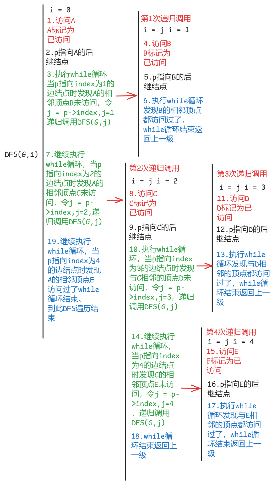
图5.4.3.3
在通过数组+链表创建的图中，使用深度优先搜索遍历，当while循环结束时，这一层递归就结束了，递归结束的条件是while循环结束。
5.5 广度优先遍历
5.5.1 广度优先遍历的思想
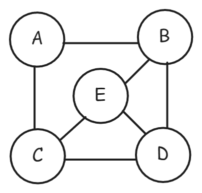
图5.5.1.1
图5.5.1.1是一个无向图，使用广度优先遍历这个无向图，（1）将顶点A作为起始顶点，先访问A，然后访问A未访问过的相邻顶点B，C。到此A的相邻顶点都访问过了。（2）访问B未访问过的相邻顶点D，E。到此B的相邻顶点都访问过了。（3）访问C未访问过的相邻顶点，发现C的相邻顶点A，E，D都访问过了。（4）访问D未访问过的相邻顶点，发现D的相邻顶点都访问过了（5）访问E未访问过的相邻顶点，发现E的相邻顶点都访问过了。到此图5.5.1.1中所有的顶点都访问过了，图5.5.1.1中广度优先遍历的顺序为：A->B->C->D->E。无向图使用广度优先遍历，起始顶点的选择可以任意，因为无向图的边是双向的，任取图中1个顶点作为起始顶点都可以遍历到图中所有的顶点。
图的创建方式分为数组创建和数组+链表创建，如果没有指定图的创建方式以及图中顶点的下标和起始顶点，广度优先遍历的结果不是唯一的。比如图5.5.1.1中，（1）可以将B作为起始顶点，访问B，然后访问B未访问过的相邻顶点A，E，D，到此B的相邻顶点都访问过了。（2）访问A未访问过的相邻顶点C，到此A的相邻顶点都访问过了。（3）访问E未访问过的相邻顶点，发现E的相邻顶点都访问过了。（4）访问D未访问过的相邻顶点，发现D的相邻顶点都访问过了。（5）访问C未访问过的相邻顶点，发现C的相邻顶点都访问过了，到此图5.5.1.1广度优先遍历完成，遍历结果为：B->A->E->D->C。
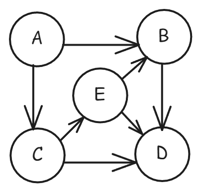
图5.5.1.2
图5.5.1.2是一个有向图，使用广度优先遍历这个有向图，起始顶点只能选择入度为0的顶点，因为只有选择入度为0的顶点才可以访问完图中所有的顶点，比如图5.5.1.2中如果选择B作为起始顶点，先访问B，然后访问B的相邻顶点D，到此B的相邻顶点都访问过了，接着访问D的相邻顶点，由于D没有相邻顶点，导致遍历无法进行下去。图5.5.1.2中入度为0的顶点是A，因此将A作为起始顶点开始广度优先遍历。（1）将顶点A作为起始顶点，先访问A，然后访问A未访问过的相邻顶点B，C。到此A的相邻顶点都访问过了。（2）访问B未访问过的相邻顶点D。到此B的相邻顶点都访问过了。（3）访问C未访问过的相邻顶点E，到此C的相邻顶点都访问过了（4）访问D未访问过的相邻顶点，发现D的相邻顶点都访问过了。（5）访问E未访问过的相邻顶点，发现E的相邻顶点都访问过了。到此图5.5.1.2中所有的顶点都访问过了，图5.5.1.2中广度优先遍历的顺序为：A->B->C->D->E。
广度优先遍历的过程：(1) 任取图中1个顶点v1作为起始顶点，访问v1，然后访问v1的相邻顶点v2，v3，v4...(2) 然后访问v2未访问过的相邻顶点。(3) 然后访问v3未访问过的相邻顶点（4）然后访问v4未访问过的相邻顶点，依此类推，直到图中所有的顶点都访问过为止。
5.5.2 通过数组创建的图的广度优先遍历
广度优先遍历(BFS)的实现方法：（1）任取图中1个顶点为起始顶点，访问该顶点并将该顶点标记为已访问。将起始顶点入队。（2）当队列不为空时执行下列操作：队头元素出队，访问出队元素未访问过的相邻顶点，将该相邻顶点标记为已访问。然后将该相邻顶点入队。重复第2步直到队列为空为止。当队列为空时说明广度优先搜索遍历完成。
图5.5.2.1
图5.5.2.1是1个无向图，使用数组方式创建这个图，定义1个二维数组表示顶点与顶点之间是否有边相连，画出的二维数组如图5.5.2.2所示，这个二维数组叫做边数组。
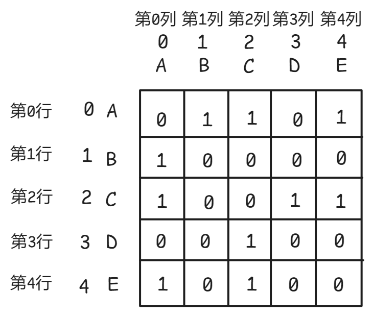
图5.5.2.2
定义1个数组visit[ ]用来标记各个顶点是否已经访问过，初始情况下将visit[ ]中每个元素都设置为0，用visit数组中元素的下标表示各顶点的下标。初始化之后的visit数组如图5.5.2.3所示。
图5.5.2.3
使用广度优先搜索遍历图5.5.2.1中的无向图，将A作为起始顶点，访问A将A标记为已访问，然后将A入队。此时已访问顶点为：A。如图5.5.2.4所示。
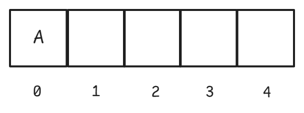
图5.5.2.4
此时队列不为空，将起始顶点A出队，通过遍历边数组第0行来查找A未访问过的相邻顶点，发现顶点A的相邻顶点B未访问，访问B将B标记为已访问，B入队。发现顶点A的相邻顶点C未访问，访问C将C标记为已访问，C入队。发现顶点A的相邻顶点E未访问，访问E将E标记为已访问，E入队。此时已访问顶点为：A->B->C->E，如图5.5.2.5所示。
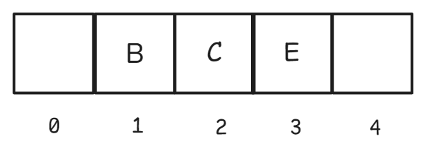
图5.5.2.5
此时队列不为空，将队头元素B出队，通过遍历边数组第1行来查找B未访问的相邻顶点，发现顶点B的相邻顶点都访问过了无需入队，如图5.5.2.6所示。
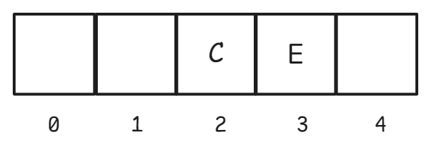
图5.5.2.6
此时队列不为空，将队头元素C出队，通过遍历边数组第2行来查找C未访问的相邻顶点，发现顶点C的相邻顶点D未访问，访问D将D标记为已访问，D入队。此时已访问顶点为：A->B->C->E->D，如图5.5.2.7所示。
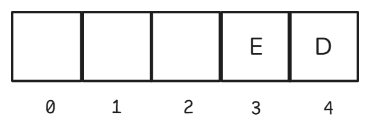
图5.5.2.7
此时队列不为空，将队头元素E出队，通过遍历边数组第4行来查找E未访问的相邻顶点，发现顶点E的相邻顶点都已访问无需入队。如图5.5.2.8所示。
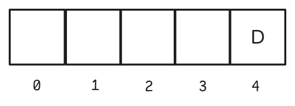
图5.5.2.8
此时队列不为空，将队头元素D出队，通过遍历边数组第3行来查找D未访问的相邻顶点，发现顶点D的相邻顶点都已访问无需入队。如图5.5.2.9所示。
此时队列为空，到此广度优先遍历完成，遍历结果：A->B->C->E->D。
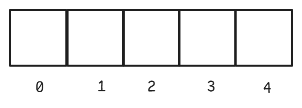
图5.5.2.9
注意：在实际代码实现中，入队的是顶点的下标，上面举的列子入队的都是顶点的值是为了描述的方便，因为用顶点的值入队比较直观方便理解。队头顶点出队后，需要通过遍历边数组的某一行来查找出队顶点未访问过的相邻顶点。访问未访问过的相邻顶点。将该相邻顶点标记为已访问。如何查找出队顶点未访问过的相邻顶点？需要先获取出队顶点的下标。假设出队顶点的下标是i，则需要遍历边数组第i行。查找顶点i未访问过的相邻顶点。
通过数组创建的图的广度优先遍历的代码如下：
xxxxxxxxxx//v是起始顶点的下标void BFS(Graph G,int v){ //定义数组存放队列中的元素 int data[MaxSize]; //front是队头元素的下标，front指向队头元素 //rear是队尾元素的下标，rear指向队尾元素，length记录队列中元素的个数 int front = 0; int rear = -1; int length = 0; //访问起始顶点v printf("%c ",G.vertexs[v]); //将起始顶点v标记为已访问 visit[v] = 1; //起始顶点入队 rear = (rear+1)%MaxSize; //在data数组中下标rear的位置插入起始顶点v data[rear] = v; //队列中元素个数+1 length++; //当队列不为空时while循环继续，队列为空时while循环结束说明广度优先遍历结束 while(length!=0){ //获取队头顶点（出队顶点），i是出队顶点 int i = data[front]; //队头顶点出队 front = (front+1)%MaxSize; //队列中元素个数-1 length--; /*遍历边数组第i行，查找顶点i未访问的相邻顶点，如果发现顶点i（i是出队顶点）的相邻顶点j未访问，则访问顶点j并将顶点j标记为已访问，顶点j入队*/ //i是行号，j是列号 for(int j = 0;j< G.vertexNum;j++){ //如果edges[i][j]==1说明i到j有边相连，j是i的相邻顶点 //visit[j]==0表示j未访问 if(G.edges[i][j]==1 && visit[j]==0){ //访问顶点j printf("%c ",G.vertexs[j]); //顶点j标记为已访问 visit[j] = 1; //顶点j入队 rear = (rear+1)%MaxSize; //在data数组中下标rear的位置插入顶点j data[rear] = j; //队列中元素个数+1 length++; } } }}5.5.3 通过数组+链表创建的图的广度优先遍历
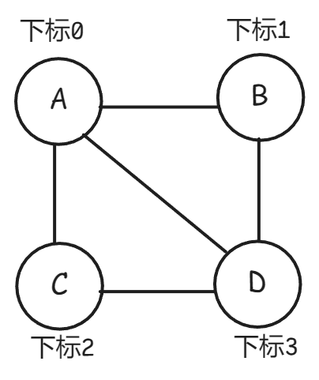
图5.5.3.1
通过数组+链表的方式创建图5.5.3.1中的无向图，可以画出下面的数组和链表。如图5.5.3.2所示。
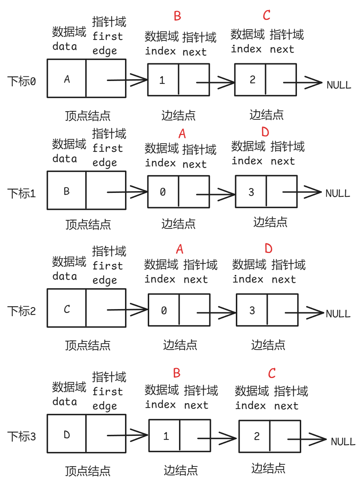
图5.5.3.2
定义1个数组visit[ ]用来标记各个顶点是否已经访问过，初始情况下将visit[ ]中每个元素都设置为0，用visit数组中元素的下标表示各顶点的下标，如图5.5.3.3所示。
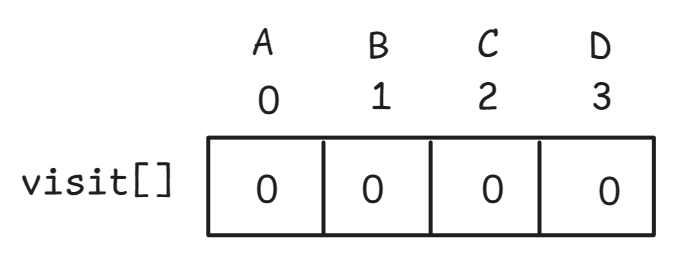
图5.5.3.3
使用广度优先遍历图5.5.3.1中的无向图，将A作为起始顶点，访问A将A标记为已访问，然后将A入队。此时已访问顶点为：A，如图5.5.3.4所示。
图5.5.3.4
此时队列不为空，将起始顶点A出队，通过遍历以顶点A为头结点的单链表来查找未访问过的A的相邻顶点，发现顶点A的相邻顶点B未访问，访问B将B标记为已访问，B入队。发现顶点A的相邻顶点C未访问，访问C将C标记为已访问，C入队。此时已访问顶点为：A->B->C，如图5.5.3.5所示。
图5.5.3.5
此时队列不为空，将队头元素B出队，通过遍历以顶点B为头结点的单链表来查找未访问过的B的相邻顶点，发现顶点B的相邻顶点D未访问，访问D将D标记为已访问，D入队。此时已访问顶点为：A->B->C->D，如图5.5.3.6所示。
图5.5.3.6
此时队列不为空，将队头元素C出队，通过遍历以顶点C为头结点的单链表来查找未访问过的C的相邻顶点，发现顶点C的相邻顶点都已访问无需入队。此时已访问顶点为：A->B->C->D，如图5.5.3.7所示。
图5.5.3.7
此时队列不为空，将队头元素D出队，通过遍历以顶点D为头结点的单链表来查找未访问过的D的相邻顶点，发现顶点D的相邻顶点都已访问无需入队。此时队列为空，到此广度优先遍历完成，遍历结果：A->B->C->D，如图5.5.3.8所示。
图5.5.3.8
注意：在实际代码实现中，入队的是顶点的下标，上面举的列子入队的都是顶点的值是为了描述的方便，因为用顶点的值入队比较直观方便理解。队头顶点出队后，通过遍历以出队顶点为头结点的单链表来查找出队顶点未访问过的相邻顶点。访问未访问过的相邻顶点。将该相邻顶点标记为已访问。如何查找出队顶点未访问过的相邻顶点？假设出队顶点的下标是 i，则需要遍历以顶点 i 为头结点的单链表。
通过数组+链表创建的图的广度优先遍历的代码如下：
xxxxxxxxxx//广度优先遍历//v是起始顶点的下标void BFS(Graph G,int v){ //定义数组存放队列中的元素 int data[MaxSize]; //front是队头元素的下标，front指向队头元素 //rear是队尾元素的下标，rear指向队尾元素，length记录队列中元素的个数 int front = 0; int rear = -1; int length = 0; //访问起始顶点v printf("%c ",G.vertexs[v].data); //将起始顶点v标记为已访问 visit[v] = 1; //起始顶点入队 rear = (rear+1)%MaxSize; //在data数组中下标rear的位置插入起始顶点v data[rear] = v; //队列中元素个数+1 length++; //当队列不为空时while循环继续，队列为空时while循环结束说明广度优先遍历结束 while(length!=0){ //获取队头顶点（出队顶点），i是出队顶点的下标 int i = data[front]; //队头顶点出队 front = (front+1)%MaxSize; //队列中元素个数-1 length--; //获取以顶点i为头结点的单链表中的第1个边结点 EdgeNode* p = G.vertexs[i].firstEdge; //遍历以顶点i为头结点的单链表，查找顶点i（顶点i是出队顶点）未访问过的相邻顶点 while(p!=NULL){ //获取顶点i的相邻顶点的下标 int j = p->index; //如果出队顶点的相邻顶点j未访问 //visit[j]==0表示顶点j未访问 if(visit[j]==0){ //访问相邻顶点j printf("%c ",G.vertexs[j].data); //顶点j标记为已访问 visit[j] = 1; //顶点j入队 rear = (rear+1)%MaxSize; //在data数组中下标rear的位置插入顶点j data[rear] = j; //队列中元素个数+1 length++; } //p指向下一个边结点 p = p->next; } } }5.6 最小生成树
5.6.1 普里姆算法的思想
假设有一个无向图G，这个无向图G中边有权值，这个无向图G中顶点的个数等于n，这个无向图G有一颗生成树，这颗生成树是一个无向图，这颗生成树需要满足以下条件：（1) 生成树是无向图G的一部分，生成树中不能包含无向图G中没有的顶点和边，也就是说生成树中有的顶点和边，无向图G中也有。（2）生成树包含无向图G中所有的顶点（3）生成树有n-1条边（4）生成树中不存在回路（5）生成树中任意两个顶点之间都存在路径，也就是说生成树是连通图。无向图有生成树，但是有向图没有生成树，最小生成树是指生成树中各条边的权值之和最小。
图5.6.1.1
图5.6.1.1一个无向有权图，使用普里姆算法求这个图的最小生成树。将A作为起始顶点加入生成树。此时生成树中只有1个顶点A，如图5.6.1.2所示。
图5.6.1.2
第1轮：选择剩余顶点距离当前生成树权值最小的边，这里的剩余顶点指未添加到生成树中的顶点，此时剩余顶点为{B,C,D}，剩余顶点距离当前生成树的边为{(B,A)36,(D,A)16,(C,A)∞}，剩余顶点距离当前生成树权值最小的边是(D,A)，权值是16，将边(D,A)以及顶点D添加到生成树中。如图5.6.1.3所示。
xxxxxxxxxx图5.6.1.3
第2轮：选择剩余顶点距离当前生成树权值最小的边，此时剩余顶点为{B,C}，剩余顶点距离当前生成树的边为{(B,A)36,(B,D)20,(C,D)23}，剩余顶点距离当前生成树权值最小的边是(B,D)，权值是20，将边(B,D)以及顶点B添加到生成树中。如图5.6.1.4所示。
图5.6.1.4
第3轮：此时剩余顶点为{C}，选择剩余顶点距离当前生成树权值最小的边，剩余顶点距离当前生成树的边为{(C,D)23,(C,B)42}，距离当前生成树权值最小的边是(C,D)，权值是23，将边(C,D)以及顶点C添加到生成树中。到此最小生成树创建完成，如图5.6.1.5所示。
图5.6.1.5
5.6.2 普里姆算法的实现
图5.6.2.1
图5.6.2.1是一个无向有权图，要求这个图的最小生成树，需要先定义1个二维数组存储各顶点之间边的权值，二维数组如图5.6.2.2所示：

图5.6.2.2
定义minEdge数组记录每个剩余顶点到当前生成树的最短边的权值，剩余各顶点就是未添加到生成树中的顶点。定义isJoin数组记录每个顶点是否已经加入生成树，如果顶点 i 没有加入生成树则isJoin[ i ]=0，如果顶点 i 已加入生成树则isJoin[ i ] =1。定义adjacent数组记录每个剩余顶点到当前生成树的最短边所指向的顶点的下标。这三个数组的元素个数等于图中顶点个数。
首先需要对minEdge数组，isJoin数组，adjacent数组进行初始化，将isJoin数组中每个元素的值都设置为0，表示当前没有顶点加入生成树。将下标为0的起始顶点加入生成树，令isJoin[0] = 1，此时生成树只有1个顶点A，剩余顶点到当前生成树的最短边所指向的顶点是起始顶点，将adjacent数组中每个元素的值设置为起始顶点的下标，当前起始顶点的下标是0。当生成树中只有1个起始顶点时，剩余顶点到当前生成树的最短边的权值等于剩余顶点到起始顶点的边的权值。初始化之后三个数组的值和生成树如图5.6.2.3所示：
图5.6.2.3
第1轮：查找剩余顶点距离当前生成树权值最小的一条边。并将这条边所连接的顶点加入生成树。如何查找？需要遍历minEdge数组，查找未添加到生成树并且minEdge的值最小的顶点，发现minEdge的最小值是16，16对应的顶点是下标为3的顶点D，将D添加到生成树中，令isJoin[3]=1，令k =3，k表示刚才加入生成树的顶点D的下标。同时将边（D，A）添加到生成树中。通过adjacent[ k ]获取A的下标。因为adjacent[3]保存的是下标为3的顶点D到当前生成树的最短边所指向的顶点的下标，所指向的顶点的下标是0。D加入生成树之后生成树和isJoin数组如图5.6.2.4所示：
图5.6.2.4
总结：当下标为k的顶点加入生成树之后，同时将边(k，adjacent[ k ])添加到生成树中。 adjacent[ k ]是顶点k到当前生成树的最短边所指向的顶点的下标。
此时D刚添加到生成树中，生成树发生了变化，需要更新minEdge数组。此时剩余顶点是{B,C}。更新剩余顶点的minEdge值的方法为：循环遍历所有的顶点，如果刚添加到生成树中的顶点k到剩余顶点 j 的权值小于剩余顶点j的minEdge值。则将剩余顶点j的minEdge值修改为刚添加到生成树中的顶点k到剩余顶点j的权值。伪代码如下，isJoin[ j ]==0用来筛选剩余顶点。
xxxxxxxxxxfor(j=0;j<顶点个数;j++){ if(isJoin[j]==0 && edges[k][j]<minEdge[j]){ minEdge[j] = edges[k][j];}(D，C)的权值是23，minEdge[ 2 ]=INF ，令minEdge[ 2 ]=23。修改adjacent[ 2 ]=刚添加到生成树中D的下标=3，表示C到当前生成树的最短边所指向的顶点的下标是3。(D，B)的权值是20，minEdge[ 1 ]=36，令minEdge[ 1 ]=20，修改adjacent[ 1 ]=刚添加到生成树中D的下标=3 ，表示B到当前生成树的最短边所指向的顶点的下标是3。
总结：修改minEdge[ j ]的值是因为新顶点加入生成树之后，导致剩余顶点到当前生成树有更短的边。
总结：当下标为j的顶点的minEdge的值修改之后，同时需要修改下标为j的顶点的adjacent的值，adjacent[ j ] = 刚添加到生成树中顶点的下标k，修改adjacent的值是因为新顶点加入生成树之后导致剩余顶点到当前生成树的最短边发生了改变，最短边所指向的顶点也发生了改变。
伪代码如下：
xxxxxxxxxxfor(j=0;j<顶点个数;j++){ if(isJoin[j]==0 && edges[k][j]<minEdge[j]){ minEdge[j] = edges[k][j]; adjacent[j] = k;} 第1轮结束之后三个数组和生成树如图5.6.2.5所示。
图5.6.2.5
第2轮：查找未添加到生成树并且minEdge的值最小的顶点，发现minEdge的最小值是20，20对应的顶点是下标为1的顶点B，将B添加到生成树中，令isJoin[1]=1，令k =1，k表示刚才加入生成树的顶点B的下标。adjacent[ k ] = 3，(k，adjacent[ k ]) = (1，3)，将边(B，D)加入生成树。如图5.6.2.6所示。
图5.6.2.6
此时B刚添加到生成树中，生成树发生了变化，需要更新minEdge数组。此时剩余顶点是{C}。(B，C)的权值是42，minEdge[2]=23，不需要修改minEdge[2]和adjacent[2]。第2轮结束之后三个数组和生成树如图5.6.2.7所示。
图5.6.2.7
第3轮：查找未添加到生成树并且minEdge的值最小的顶点，发现minEdge的最小值是23，23对应的顶点是下标为2的顶点C，将C添加到生成树中，令isJoin[2]=1，令k =2，k表示刚才加入生成树的顶点C的下标。adjacent[ k ] = 3，(k，adjacent[ k ]) = (2，3)，将边(C，D)加入生成树。如图5.6.2.8所示。

图5.6.2.8
此时C刚添加到生成树中，生成树发生了变化，此时没有剩余顶点不需要更新minEdge数组和adjacent数组。到此所有顶点都加入生成树，最小生成树创建完成。
普里姆算法的代码如下：
xxxxxxxxxx//v是起始顶点void Prim(Graph &G,int v){ int i,j,m; //首先需要对minEdge数组，isJoin数组，adjacent数组进行初始化 //将isJoin数组中每个元素的值都设置为0，表示当前没有顶点加入生成树。 for(i=0;i<G.vertexNum;i++){ isJoin[i] =0; } //将下标为v的起始顶点加入生成树，令isJoin[v] = 1 isJoin[v] = 1; //将adjacent数组中每个元素的值设置为起始顶点的下标，当前起始顶点的下标是v。 for(i=0;i<G.vertexNum;i++){ adjacent[i] =v; } //初始化minEdge数组，初始情况下minEdge数组存储的是起始顶点到剩余各顶点边的权值 for(i=0;i<G.vertexNum;i++){ minEdge[i] = G.edges[v][i]; } //到此已经有1个顶点加入了生成树，将剩下的顶点加入生成树，循环次数等于顶点个数-1 for(m=0;m<G.vertexNum-1;m++){ //查找未添加到生成树并且minEdge的值最小的顶点 int min = Inf; int k; //for循环结束之后，min保存的是距离当前生成树权值最小的一条边的权值 for(i=0;i<G.vertexNum;i++){ if(isJoin[i]==0 && minEdge[i]<min){ min = minEdge[i]; k = i; } } //未添加到生成树并且minEdge的值最小的顶点就是下标为k的顶点 //将下标为k的顶点加入生成树 isJoin[k] = 1; //当下标为k的顶点加入生成树之后，同时将边(k，adjacent[k])添加到生成树中。输出边(k,adjacent[k]) //min是边(k,adjacent[k])的权值 printf("(%d,%d,%d)\n",k,adjacent[k],min); //此时生成树发生了变化，需要更新minEdge数组。 for(j=0;j<G.vertexNum;j++){ if(isJoin[j]==0&&G.edges[k][j]<minEdge[j]){ minEdge[j] = G.edges[k][j]; adjacent[j] = k; } } }}
5.6.3 并查集
并查集是一种数据结构，并查集的主要作用是：（1）查找某个元素属于哪个集合（2）如果两个元素不属于同一个集合则可以将这两个元素所属的集合合并。通常使用树来表示集合，每颗树都可以看作一个集合，每颗树都有1个根结点，通常使用集合的根结点来给集合命名，如图5.6.3.1所示，集合3是1颗树，集合3的根结点是3，集合6是1颗树，集合6的根结点是6。如果两个元素所属集合的根结点相同则说明这两个元素属于同一个集合。元素1和元素2所属集合的根结点都是3，说明元素1和元素2属于同一个集合。如果两个元素所属集合的根结点不相同则说明这两个元素不属于同一个集合。元素2所属集合的根结点是3，元素5所属集合的根结点是6，说明元素2与元素5不是同一个集合。查找某个元素属于哪个集合就是查找元素所属集合的根结点，元素2所属集合的根结点是3，因此元素2属于集合3，元素5所属集合的根结点是6，因此元素5属于集合6。在使用树表示的集合中，每个结点都指向它的父亲结点，如图5.6.3.1所示，结点2指向结点2的父亲结点3，结点5指向结点5的父亲结点6。
图5.6.3.1
如果两个元素属于同一个集合，则这两个元素所属的集合不能合并，如图5.6.3.1所示，元素2和元素1属于集合3，因此元素2和元素1所属的集合不能合并。如果两个元素不属于同一个集合，则这两个元素所属的集合可以合并，元素2属于集合3，元素5属于集合6，因此集合3与集合6可以合并。
现在需要将元素2所属的集合与元素5所属的集合合并，需要先找到元素2所属集合的根结点以及元素5所属集合的根结点，如图5.6.3.1所示，元素2所属集合的根结点是3，元素5所属集合的根结点是6，元素2与元素5所属集合的根结点不同因此可以将元素2与元素5所属的集合合并，也就是将集合3与集合6合并。合并集合就是将1个集合的根结点指向另一个集合的根结点，如图5.6.3.2所示，将集合3与集合6合并，将根结点6指向根结点3，6的父亲结点修改成3。也可以将根结点3指向根结点6，3的父亲结点修改成6。如图5.6.3.3所示。
图5.6.3.2
图5.6.3.3
定义1个parent[ ]数组记录图5.6.3.3中每个元素的父亲结点，parent数组元素的下标就是集合中元素的编号，如图5.6.3.4所示，parent[ 1 ] =3表示元素1的父亲结点是3，parent[ 3 ] =6表示元素3的父亲结点是6，parent[ 6 ] = -1表示元素6是根结点。
图5.6.3.4
查找元素所属集合的代码如下：
xxxxxxxxxx//查找元素所属集合的根结点,parent数组中存储的是每个元素的父亲结点int find(int parent[],int k){ //当parent[k]不等于-1说明k不是根结点 //如果k不是根结点while循环继续直到找到根结点为止 //由下往上查找元素所属集合的根结点 while(parent[k]!=-1){ //更新k的值，求k的父亲结点 k = parent[k]; } //程序执行到这里说明parent[k]等于-1，k是根结点 return k;}以上代码执行过程如图5.6.3.5所示。
图5.6.3.5
两个集合合并的代码如下所示：
xxxxxxxxxx//将元素i和j所属的集合进行合并，要求i和j不是同一个集合void merge(int parent[],int i,int j){ //求元素i所属集合的根结点 int m = find(parent,i); //求元素j所属集合的根结点 int n = find(parent,j); //如果m不等于n说明i和j不属于同一个集合，i和j所属的集合可以合并 if(m!=n){ //合并i和j所属的集合,将根结点m指向根结点n或者将根结点n指向根结点m //这里采用根结点m指向根结点n，m的父亲结点修改成n parent[m] = n; } }
5.6.4 克鲁斯卡尔算法的思想
克鲁斯卡尔算法是对边进行操作，需要先对图中各条边按照从小到大的顺序进行排序，初始情况下将图中顶点都看成集合，图中有n个顶点图中就有n个集合。判断从小到大排好序的每条边，如果这条边的两个顶点属于两个不同的集合，则这两个顶点相连的边添加到最小生成树中，这两个顶点所属的两个集合合并为一个集合。如果这条边的两个顶点属于同一个集合，则这两个顶点相连的边舍弃，如果不舍弃这条边生成树中会形成回路。
图5.6.4.1
使用克鲁斯卡尔算法求图5.6.4.1中的最小生成树，需要先将图中的每条边按照从小到大的顺序进行排序，排序之后的结果如下所示：（B,C)15 (E,F)18 (A,D)20 (E,D)21 (D,F)22 (D,C)26 (A,B)36 (C,F)39 (A,E)42。
将图中所有的顶点都看成集合，图中集合={A} {B} {C} {D} {E} {F}，选取边（B,C)15，因为顶点B和C属于不同的集合，将（B,C)15添加到生成树中，同时将B和C所属的集合合并。如图5.6.4.2所示，此时图中集合={A} {B,C} {D} {E} {F}
图5.6.4.2
选取边（E,F）18，因为顶点E和F属于不同的集合，将（E,F）18添加到生成树中，同时将E和F所属的集合合并，如图5.6.4.3所示，此时图中集合={A} {B,C} {D}{E,F}。
图5.6.4.3
选取边（A,D）20，因为顶点A和D属于不同的集合，将（A,D）20添加到生成树中，同时将A和D所属的集合合并，如图5.6.4.4所示，此时图中集合={A,D} {B,C} {E,F}。
图5.6.4.4
选取边（E,D）21，因为顶点E和D属于不同的集合，将（E,D）21添加到生成树中，同时将E和D所属的集合合并，如图5.6.4.5所示，此时图中集合={A,D,E,F} {B,C} 。
图5.6.4.5
选取边（D,F）22，因为顶点D和F属于同一个集合，边（D,F）需要舍弃，否则生成树中会形成回路。此时图中集合={A,D,E,F} {B,C} 。
选取边（D,C）26，因为顶点D和C不属于同一个集合，边（D,C）26需要添加到生成树中，将顶点D和C所属的集合合并，此时图中集合={A,D,E,F,B,C} 。当图中所有的顶点都处于一个集合时说明最小生成树创建完成，如图5.6.4.6所示。
图5.6.4.6
5.6.5 克鲁斯卡尔算法的实现
在讲解克鲁斯卡尔算法的实现之前，需要定义1个结构体Edge，这个结构体中有3个成员分别是图中边的起始顶点的下标begin，图中边的结束顶点的下标end，图中边的权值weight。结构体Edge的定义如下：
xxxxxxxxxx//定义边typedef struct Edge{ //图中边的起始顶点的下标 int begin; //图中边的结束顶点的下标 int end; //图中边的权值weight int weight;}Edge;还需要定义1个边数组存储所有边的信息，这个边数组是结构体数组存储的是结构体Edge。代码如下：
xxxxxxxxxxEdge edges[Maxsize];图5.6.5.1
将图5.6.5.1中每条边按照从小到大的顺序进行排序，排好序之后如下所示： 起始顶点 结束顶点 权值 begin end weight edges[0] 1 2 15 edges[1] 4 5 18 edges[2] 0 3 20 edges[3] 3 4 21 edges[4] 3 5 22 edges[5] 2 3 26 edges[6] 0 1 36 edges[7] 2 5 39 edges[8] 0 4 42
定义数组parent记录每个结点的父亲结点，如果一个结点的父亲结点等于-1，说明当前结点是根结点。初始情况下，图中每个顶点都是一个单独的集合，每个集合中只有1个结点，这个结点就是根结点。将parent数组中每个元素的值设置为-1，表示初始情况下所有的顶点都是根结点，parent数组初始化之后如下所示：
parent[0] -1 parent[1] -1 parent[2] -1 parent[3] -1 parent[4] -1 parent[5] -1
第1轮：判断边(B,C)中的两个顶点B和C是否属于同一个集合。求B所属集合的根结点：因为parent[1] = -1，说明B所属集合的根结点是B。求C所属集合的根结点：因为parent[2] = -1，说明C所属集合的根结点是C。因为B所属集合和C所属集合的根结点不同，说明B和C不属于同一个集合。将边(B,C)添加到生成树中，B所在的集合与C所在的集合合并为同一个集合。让B所属集合的根结点指向C所属集合的根结点，让根结点B指向根结点C，B的父亲结点修改成C。令parent[1] = 2。如图5.6.5.2所示。
图5.6.5.2
第2轮：判断边(E,F)中的两个顶点E和F是否属于同一个集合。求E所属集合的根结点：因为parent[4] =-1，说明E所属集合的根结点是E。求F所属集合的根结点：因为parent[5] = -1，说明F所属集合的根结点是F。因为E所属集合和F所属集合的根结点不同，说明E和F不属于同一个集合。将边(E,F)添加到生成树中，E所在的集合与F所在的集合合并为同一个集合。让E所属集合的根结点指向F所属集合的根结点，让根结点E指向根结点F，E的父亲结点修改成F。令parent[4] = 5。如图5.6.5.3所示。
图5.6.5.3
第3轮：判断边(A,D)中的两个顶点A和D是否属于同一个集合。求A所属集合的根结点：因为parent[0] = -1，说明A所属集合的根结点是A。求D所属集合的根结点：因为parent[3] = -1，说明D是根结点。因为A所属集合和D所属集合的根结点不同，说明A和D不属于同一个集合。将边(A,D)添加到生成树中，A所在的集合与D所在的集合合并为同一个集合。让A所属集合的根结点指向D所属集合的根结点，让根结点A指向根结点D，A的父亲结点修改成D。令parent[0] = 3。如图5.6.5.4所示。
图5.6.5.4
第4轮：判断边(D,E)中的两个顶点D和E是否属于同一个集合。求D所属集合的根结点：因为parent[3] =-1，说明D所属集合的根结点是D。求E所属集合的根结点：因为parent[4] = 5 parent[5] =-1，说明E所属集合的根结点是F。因为D所属集合和E所属集合的根结点不同，说明D和E不属于同一个集合。将边(D,E)添加到生成树中，D所在的集合和E所在的集合合并为一个集合。让D所属集合的根结点指向E所属集合的根结点，让根结点D指向根结点F，D的父亲结点修改成F。令parent[3] = 5。如图5.6.5.5所示。
图5.6.5.5
第5轮：判断边(D,F)中的两个顶点D和F是否属于同一个集合。求D所属集合的根结点：因为parent[3] =5 parent[5] =-1，说明D所属集合的根结点是F。求F所属集合的根结点：因为parent[5] = -1，说明F所属集合的根结点是F。因为D所属集合和F所属集合的根结点相同，说明D和F属于同一个集合。将边(D,F)舍弃。
第6轮：判断边(C,D)中的两个顶点C和D是否属于同一个集合。求C所属集合的根结点：因为parent[2] =-1，说明C所属集合的根结点是C。求D所属集合的根结点：因为parent[3] = 5 parent[5]= -1，说明D所属集合的根结点是F。因为C所属集合和D所属集合的根结点不相同，说明C和D不属于同一个集合。将边(C,D)添加到生成树中，C所在的集合与D所在的集合合并为一个集合。让C所属集合的根结点指向D所属集合的根结点，让根结点C指向根结点F，C的父亲结点修改成F。令parent[2] = 5。此时生成树中边的条数等于顶点个数-1，图中所有的顶点合并为一个集合，根结点是F，说明最小生成树创建完成。edges数组中后面的边无需判断。如图5.6.5.6所示。
图5.6.5.6
edge数组中的元素按照边的权值从小到大的顺序进行排序。排序方法使用直接插入排序，直接插入排序的内容参见第7章排序算法。代码如下所示：
xxxxxxxxxx//n是edge数组中元素的个数,edge数组中元素的个数等于边的条数void InsertSort(Edge edge[],int n){ //i是当前往有序序列中插入的元素的下标 int i; //j是有序序列中元素的下标 int j; //用key保存当前往有序序列中插入的元素 Edge key; /*定义for循环对下标为1~(n-1)的元素进行直接插入排序，n是待排序数组中元素的个数，将各元素插入已排好序的序列中。 第一个元素不需要进行直接插入排序，因为单个元素肯定是有序的因此i的下标从1开始。*/ for(i=1;i<n;i++){ //用key记录当前往有序序列中插入的元素 key = edge[i]; //j的初始值是有序序列中最后1个元素的下标 j = i -1; /*如果edge[j].weight>key.weight，则edge[j]向后移动1个位置，j--，j向前移动1个位置。*/ while(j>=0 && edge[j].weight>key.weight){ edge[j+1] = edge[j]; j--; } /*如果edge[j].weight<key.weight，此时while循环结束。说明key的插入位置找到了，key需要插入在下标j+1的位置，while循环结束之后在下标j+1的位置插入key。*/ /*如果j==-1则j>=0不成立，此时while循环结束，key插入在下标j+1的位置即下标0的位置*/ edge[j+1] = key; }}克鲁斯卡尔算法的完整代码如下：
xxxxxxxxxx//定义无向有权图typedef struct Graph{ //图的顶点数量 int vertexNum; //图的边的数量 int edgesNum;}Graph;//定义边结构体typedef struct Edge{ //图中边的起始顶点的下标 int begin; //图中边的结束顶点的下标 int end; //图中边的权值weight int weight;}Edge;
//定义parent数组用来记录每个顶点的父亲结点int parent[MaxSize];//定义边数组存储每条边的信息，边数组是结构体数组Edge edge[MaxSize];
//创建无向有权图void createUGraph(Graph &G){ //输入图的顶点个数 printf("输入图的顶点个数:"); scanf("%d",&G.vertexNum); //输入图的边的个数 printf("输入图的边的个数:"); scanf("%d",&G.edgesNum); /*定义1个for循环，for循环的次数等于边的条数， 每次for循环在控制台输入有边相连的两个顶点的下标以及两个顶点之间边的权值 */ //edgesNum是边的条数 for(int i=0;i<G.edgesNum;i++){ //v1和v2是有边相连的两个顶点的下标,w是v1到v2边的权值,w也是v2到v1边的权值 //v1是起始顶点，v2是结束顶点 int v1,v2,w; printf("输入有边相连的两个顶点的下标以及两个顶点之间边的权值："); scanf("%d %d %d",&v1,&v2,&w); //创建边结点 Edge e; //给边结点的三个成员赋值 e.begin = v1; e.end = v2; e.weight = w; //将边结点添加到结构体数组中 edge[i] = e; } }
//n是edge数组中元素的个数,edge数组中元素的个数等于边的条数void InsertSort(Edge edge[],int n){ //i是当前往有序序列中插入的元素的下标 int i; //j是有序序列中元素的下标 int j; //用key保存当前往有序序列中插入的元素 Edge key; /*定义for循环对下标为1~(n-1)的元素进行直接插入排序，n是待排序数组中元素的个数，将各元素插入已排好序的序列中。 第一个元素不需要进行直接插入排序，因为单个元素肯定是有序的因此i的下标从1开始。*/ for(i=1;i < n;i++){ //用key记录当前往有序序列中插入的元素 key = edge[i]; //j的初始值是有序序列中最后1个元素的下标 j = i -1; /*如果edge[j].weight>key.weight，则edge[j]向后移动1个位置，j--，j向前移动1个位置。*/ while(j>=0 && edge[j].weight>key.weight){ edge[j+1] = edge[j]; j--; } /*如果edge[j].weight<key.weight，此时while循环结束。说明key的插入位置找到了，key需要插入在下标j+1的位置，while循环结束之后在下标j+1的位置插入key。*/ /*如果j==-1则j>=0不成立，此时while循环结束，key插入在下标j+1的位置即下标0的位置*/ edge[j+1] = key; }}
//查找元素k所属集合的根结点,parent数组中存储的是每个元素的父亲结点int find(int parent[],int k){ //当parent[k]不等于-1说明k不是根结点，while循环继续 //由下往上查找元素所属集合的根结点 while(parent[k]!=-1){ k = parent[k]; } //程序执行到这里说明parent[k]等于-1，k是根结点 return k;}
void kruskal(Graph G){ //num记录添加到生成树中边的条数 int num = 0; //parent数组初始化,parent数组中元素的个数等于顶点个数 for(int i=0;i<G.vertexNum;i++){ parent[i] = -1; } //edge数组中的元素按照边的权值从小到大的顺序进行排序。 //edge数组中元素的个数等于边的条数 InsertSort(edge,G.edgesNum); //遍历所有的边结点,循环次数等于边的条数 for(int i=0;i<G.edgesNum;i++){ //求begin所属集合的根结点 int m = find(parent,edge[i].begin); //求end所属集合的根结点 int n = find(parent,edge[i].end); /*如果起始顶点与结束顶点所属集合的根结点不相同，则将起始顶点与结束顶点所属的集合合并，并输出起始顶点与结束顶点相连的这条边，这条边添加到最小生成树中*/ if(m!=n){ //根结点m指向根结点n，根结点m的父亲结点修改成n parent[m] = n; printf("(%d,%d)",edge[i].begin,edge[i].end); //生成树中边的条数+1 num++; } /*如果生成树中边的条数等于顶点个数-1，说明生成树创建完成， 到此可以停止循环，之后的边不需要判断。 */ if(num == G.vertexNum-1){ return; } } }
5.7 最短路径(Dijskra算法)
5.7.1 Dijskra算法的思想
在有向有权图中，最短路径是指两个顶点之间经过的边的权值之和最小的路径。如图5.7.1.1所示，使用Dijskra算法手工计算从顶点A出发到其它顶点的最短路径。顶点A是起始顶点。
图5.7.1.1
初始化：求顶点A到其它顶点的直达路径。如果没有直达路径则路径长度记为∞，如果有直达路径则路径长度为起始顶点到其它顶点边的权值，计算结果如图5.7.1.2所示。Inf表示无穷大。
图5.7.1.2
第1轮：以下将未找到最短路径的顶点叫做剩余顶点，如图5.7.1.2所示，从当前起始顶点到剩余各顶点的路径中找到路径长度最小的一条路径：A,B:30。说明从A到B的最短路径找到了。如图5.7.1.3所示。
图5.7.1.3
接下来需要判断从A到B的最短路径（A,B）到未找到最短路径的顶点是否存在更短的路径，如果存在更短的路径则需要修改路径，替换之前的路径。如果不存在更短的路径则不需要修改路径，保持原来的路径。修改之后的路径如图5.7.1.4所示。
图5.7.1.4
第2轮：如图5.7.1.4所示，从当前起始顶点到剩余各顶点的路径中找到路径长度最小的一条路径：A,D:50。说明从A到D的最短路径找到了。如图5.7.1.5所示。
图5.7.1.5
接下来需要判断A到D的最短路径（A，D）到未找到最短路径的顶点是否存在更短的路径，如果存在更短的路径则需要更新路径，替换之前的路径。如果不存在更短的路径则不需要修改路径，保持原来的路径。如图5.7.1.6所示。
图5.7.1.6
第3轮：如图5.7.1.6所示，从当前起始顶点到剩余各顶点的路径中找到路径长度最小的一条路径：A,D,C:90。说明从A到C的最短路径找到了。如图5.7.1.7所示。
图5.7.1.7
接下来需要判断从A到C的最短路径（A,D,C）到未找到最短路径的顶点是否存在更短的路径，如果存在更短的路径则需要更新路径，替换之前的路径。如果不存在更短的路径则不需要修改路径，保持原来的路径。如图5.7.1.8所示。
图5.7.1.8
第4轮：如图5.7.1.8所示，从当前起始顶点到剩余各顶点的路径中找到路径长度最小的一条路径：A,E:120。说明从A到E的最短路径找到了。到此顶点A到其它顶点的最短路径都找到了。如图5.7.1.9所示。
图5.7.1.9
顶点A到其它顶点的最短路径如下所示： A->B(A,B):30 A->D(A,D):50 A->C(A,D,C):90 A->E(A,E):120
5.7.2 Dijskra算法的实现
定义dist数组记录当前找到的起始顶点到其余顶点的最短路径，定义isJoin数组表示顶点是否找到了最短路径，如果顶点i找到了最短路径，则isJoin[ i ] = 1，如果顶点 i 没有找到最短路径，则isJoin[ i ] = 0。定义path数组记录顶点 i 在最短路径上的前驱顶点，假设顶点 i 在最短路径上的前驱是 j，则path[ i ] = j。起始顶点在最短路径上没有前驱，假设起始顶点的下标是0，则path[ 0 ] = -1。代码如下：
xxxxxxxxxx//定义isJoin数组，如果顶点i已经找到了最短路径则isJoin[i] = 1,没有找到最短路径则isJoin[i] = 0int isJoin[MaxSize];//定义path数组，用来记录顶点i在最短路径上的前驱顶点int path[MaxSize];//定义dist数组，用来记录当前起始顶点v到其余各顶点最短路径的长度int dist[MaxSize];初始化：需要定义1个for循环，for循环的次数等于图中顶点的个数，设置isJoin[i] = 0表示当前没有顶点找到最短路径，如果起始顶点到其余顶点有边相连，则dist的值等于起始顶点到其余顶点边的权值，如果起始顶点到其余顶点无边相连，则dist的值等于无穷大。如果起始顶点到其余顶点有边相连，则其余顶点的前驱就是起始顶点，如果起始顶点到其余顶点无边相连，则其余顶点没有前驱，设置path[ i ]=-1，-1表示顶点i没有前驱。因为起始顶点到自身的最短路径长度是0，假设起始顶点是v，则isJoin[ v ]=1，表示起始顶点已经找到最短路径了。
初始化的代码如下所示：
xxxxxxxxxx//初始化for (i = 0; i < G.vertexNum; i++) { //isJoin数组初始化,初始情况下没有顶点找到最短路径 isJoin[i] = 0; //dist数组初始化，初始情况下dist数组中记录的是起始顶点v到其余各顶点边的权值 dist[i] = G.edges[v][i]; /*path数组初始化，如果起始顶点v到其余顶点有边相连则path的值设置为v， 如果起始顶点v到其余顶点无边相连则path的值设置为-1 */ //v到其余顶点有边相连，i的前驱就是起始顶点v if (G.edges[v][i] != Inf && G.edges[v][i] != 0) { path[i] = v; //v到其余顶点无边相连，i没有前驱path的值设置为-1 } else { path[i] = -1; }}//起始顶点到自身无边相连最短路径是0，设置isJoin[v] = 1表示起始顶点找到了最短路径isJoin[v] = 1;外层要定义1个for循环，for循环次数等于顶点个数-1，查找除起始顶点外的顶点的最短路径。从未找到最短路径的顶点中查找最短路径，需要从未找到最短路径的顶点中查找dist数组的最小值以及这个最小值对应的顶点下标。假设这个最小值对应的顶点下标是u，则说明起始顶点到顶点u的最短路径找到了，设置isJoin[u] = 1。
根据5.7.1小节第1轮可以知道起始顶点A到B的最短路径是A->B，最短路径长度是30。此时A到C的最短路径是无穷大。接下来需要判断从A->B再到剩余顶点是否存在更短的路径，如果存在更短的路径则需要修改路径长度。假设顶点B的下标是u，剩余顶点C的下标是i，dist[ i ]表示当前从起始顶点A到剩余顶点C的最短路径的长度，此时dist[ i ]=∞，dist[u]表示起始顶点A到顶点B的最短路径的长度，dist[u] =30 ，edges[ u] [ i]用来获取顶点B到顶点C的边的权值 ，edges[ u] [ i] =70。因为顶点A到B的最短路径的长度(dist[u])+顶点B到顶点C的边的权值(edges[ u] [ i]) =30+70=100 < 顶点A到顶点C的边的权值(dist[ i ])，则将A到C的最短路径的长度修改为100（dist[u]+G.edges[ u] [ i]）。将C的前驱顶点修改为B， path[ i ] = u。
图5.7.2.1
xxxxxxxxxx//for循环次数等于图中顶点个数-1，因为起始顶点已经找到最短路径了for(j=0;j<G.vertexNum-1;j++){ int min = Inf; //剩余顶点指的是未找到最短路径的顶点 /*从当前起始顶点到剩余各顶点的路径中找到路径长度最小的一条路径,需要从未找到最短路径的顶点中查找dist数组的最小值以及这个最小值对应的顶点下标,查找dist数组的最小值需要遍历dist数组*/ for(i=0;i<G.vertexNum;i++){ if(isJoin[i]==0&&dist[i]<min){ min = dist[i]; u = i; } } //到此起始顶点v到顶点u的最短路径找到了，最短路径的长度是min，设置isJoin[u] =1 isJoin[u] = 1; /*接下来需要判断从起始顶点到u的最短路径再到剩余顶点是否存在比之前更短的路径，如果存在更短的路径则需要修改路径，替换之前的路径。*/ for(i=0;i<G.vertexNum;i++){ /*isJoin[i]==0用来筛选剩余顶点，dist[u]表示起始顶点到顶点u的最短路径的长度，此时u的最短路径已经找到了。G.edges[u][i]用来获取顶点u到剩余顶点i的边的权值，dist[u]+G.edges[u][i]表示从起始顶点到u的最短路径再到剩余顶点i的路径长度。dist[i]表示当前从起始顶点到剩余顶点i的最短路径的长度*/ if(isJoin[i]==0 && dist[u]+G.edges[u][i]<dist[i]){ dist[i] = dist[u]+G.edges[u][i]; //此时顶点i的前驱是u path[i] = u; } }}Dijskra算法完整代码如下：
xxxxxxxxxx//Dijskra算法,v是起始顶点void Dijskra(Graph &G, int v) { int i, u, j; //初始化 for (i = 0; i < G.vertexNum; i++) { //isJoin数组初始化,初始情况下没有顶点找到最短路径 isJoin[i] = 0; //dist数组初始化，初始情况下dist数组中记录的是起始顶点v到其余各顶点边的权值 dist[i] = G.edges[v][i]; /*path数组初始化，如果起始顶点v到其余顶点有边相连则path的值设置为v， 如果起始顶点v到其余顶点无边相连则path的值设置为-1 */ //v到其余顶点有边相连，i的前驱就是起始顶点v if (G.edges[v][i] != Inf && G.edges[v][i] != 0) { path[i] = v; //v到其余顶点无边相连，i没有前驱path的值设置为-1 } else { path[i] = -1; } } //起始顶点到自身无边相连最短路径是无穷大，设置isJoin[v] = 1表示起始顶点找到了最短路径 isJoin[v] = 1; //for循环次数等于图中顶点个数-1，因为起始顶点已经找到最短路径了 for (j = 0; j < G.vertexNum - 1; j++) { int min = Inf; //剩余顶点指的是未找到最短路径的顶点 /*从当前起始顶点到剩余各顶点的最短路径中找到路径长度最小的一条路径,需要从未找到最短路径的顶点中 查找dist数组的最小值以及这个最小值对应的顶点下标,查找dist数组的最小值需要遍历dist数组 */ for (i = 0; i < G.vertexNum; i++) { if (isJoin[i] == 0 && dist[i] < min) { min = dist[i]; u = i; } } //到此起始顶点v到顶点u的最短路径找到了，最短路径的长度是min，设置isJoin[u] =1 isJoin[u] = 1; /*接下来需要判断从起始顶点到u的最短路径再到剩余顶点是否存在比之前更短的路径， 如果存在更短的路径则需要修改路径，替换之前的路径。需要遍历dist数组 */ for (i = 0; i < G.vertexNum; i++) { /*isJoin[i]==0用来筛选剩余顶点，dist[u]表示起始顶点到顶点u的最短路径的长度，此时u的 最短路径已经找到了。G.edges[u][i]用来获取顶点u到剩余顶点i的边的权值，dist[u]+G.edges[u][i] 表示从起始顶点到u的最短路径再到剩余顶点i的路径长度。dist[i]表示当前从起始顶点到剩余顶点i 的最短路径的长度 */ if (isJoin[i] == 0 && dist[u] + G.edges[u][i] < dist[i]) { dist[i] = dist[u] + G.edges[u][i]; //此时顶点i的前驱是u path[i] = u; } } }}path数组中记录的是当前顶点的前驱顶点，如果 j = path[ i ]，说明 i 的前驱顶点是 j。假设A到C的最短路径是A->D->C，通过path数组求A到C的最短路径，需要定义while循环，先将C入栈，然后通过path数组获取C的前驱D，然后将D入栈，再通过path数组获取D的前驱A，此时发现A是起始顶点while循环结束。然后将A入栈。入栈完成之后需要出栈，出栈的过程打印出栈元素，出栈顺序就是C的最短路径。
图5.7.2.2
代码如下：
xxxxxxxxxx//求最短路径,v是要求最短路径的顶点的下标void printPath(int v) { //定义顺序栈，将找到的顶点的前驱存储在顺序栈中 int stack[MaxSize]; int top = -1; /*如果path数组的值为-1说明当前的顶点v是起始顶点，起始顶点没有前驱 如果path数组的值不为-1则说明当前的顶点v不是起始顶点，while循环继续 */ while (path[v]!=-1) { top++; stack[top] = v; //获取v的前驱 v = path[v]; } //while循环结束之后，起始顶点还没有入栈，需要将起始顶点入栈，此时v是起始顶点的下标，v入栈 top++; stack[top] = v; //出栈，打印最短路径 while(top!=-1){ //打印栈顶元素 printf("%d ",stack[top]); //栈顶元素出栈 top--; } }5.8 最短路径(Floyd算法)
5.8.1 Floyd算法的思想
Floyd算法的思想：Floyd算法可以求任意两个顶点之间的最短路径，初始情况下顶点与顶点之间的最短路径等于顶点与顶点之间的权值，将图中的顶点看作中间顶点，在当前的最短路径中加入中间顶点，如果加入中间顶点后路径长度变短，则需要修改路径。如果加入中间顶点后路径长度没有变短则不需要修改路径。
如图5.8.1.1所示是一个有向有权图，使用Floyd算法计算任意两个顶点之间的最短路径。定义二维数组D存储顶点与顶点之间的最短路径，定义二维数组path存储顶点到顶点之间的最短路径所经过的中转顶点。如果顶点到顶点之间的最短路径没有中转顶点，则path数组的值为-1，如果顶点到顶点之间的最短路径有中转顶点，则path数组的值为中转顶点的下标。
图5.8.1.1
初始情况下顶点与顶点之间的最短路径就是顶点与顶点之间边的权值，初始情况下顶点与顶点之间的路径都是直达路径没有中转顶点，所以path数组的值都设置为-1。初始情况下D数组与path数组如图5.8.1.2所示。
图5.8.1.2
将A看作中转顶点，判断A的加入是否会产生比直达路径更短的路径，如果存在更短的路径就修改路径长度，替换之前的路径长度。顶点到自身的路径永远是0，不需要判断。如果直达路径中包括顶点A也不需要判断。B到A的路径长度是8，A到C的路径长度是13，则B到A到C的路径长度是21，不需要修改B到C的路径长度。C到A的路径长度是5，A到B的路径长度是6，则C到A到B的路径长度是11，将C到B的路径长度修改为11，C到B的路径所经过的中转顶点设置为A。A的下标是0，修改之后的D数组与path数组如图5.8.1.3所示。
图5.8.1.3
将B看作中转顶点，判断B的加入是否会产生比之前的路径更短的路径，如果存在更短的路径就修改路径长度，替换之前的路径长度。顶点到自身的路径永远是0，不需要判断。如果之前的路径中包括顶点B也不需要判断。A到B的路径长度是6，B到C的路径长度是4，则A到B到C的路径长度是10，A到C的路径长度修改为10。A到C的路径所经过的中转顶点修改为B，B的下标是1，C到B的路径长度是11，B到A的路径长度是8，则C到B到A的路径长度是19，不需要修改C到A的路径长度，修改之后的D数组与path数组如图5.8.1.4所示。
图5.8.1.4
将C看作中转顶点，判断C的加入是否会产生比之前的路径更短的路径，如果存在更短的路径就修改路径长度，替换之前的路径长度。顶点到自身的路径永远是0，不需要判断。如果之前的路径中包括顶点C也不需要判断。A到C的路径长度是10，C到B的路径长度是11，则A到C到B的路径长度是21，A到B的路径长度不修改。B到C的路径长度是4，C到A的路径长度是5，则B到C到A的路径长度是9，不需要修改B到A的路径长度，到此为止Floyd算法执行结束，修改之后的D数组与path数组如图5.8.1.5所示。
图5.8.1.5
5.8.2 Floyd算法的实现
定义二维数组D用来存储顶点与顶点之间的最短路径，定义二维数组path用来存储当前顶点到顶点之间的最短路径所经过的中转点。D数组初始化，将D数组中每个元素的值设置为顶点与顶点之间的直达路径的长度，直达路径的长度等于顶点与顶点之间边的权值。path数组初始化，path数组中每个元素的值都设置为-1，表示初始情况下顶点与顶点之间的直达路径没有中转点。
定义1个三层for循环，最外层的for循环遍历图中所有的顶点，顶点的下标用k表示，将图中所有的顶点看作中转点，内层的两个for循环遍历D数组，D数组记录的是当前顶点与顶点之间的最短路径，定义变量i表示D数组的行号，定义变量j表示D数组的列号。以顶点k为中转顶点，如果i经过中转顶点k到j的路径小于i到j的路径，则需要修改i到j的路径，将i到j的路径修改为i经过中转顶点k到j的路径，此时i到j的最短路径经过中转顶点k，path[i] [j] = k。代码如下所示。
xxxxxxxxxx//定义数组D存储顶点到顶点之间的最短路径int D[MaxSize][MaxSize];//定义数组path存储顶点到顶点之间的最短路径经过的中转顶点int path[MaxSize][MaxSize];
void floyd(Graph G){ int k,i,j; /*D数组和path数组初始化,将D数组中每个元素的值设置为顶点与顶点之间的直达路径的长度，直达路径的长度等于顶点与顶点之间边的权值。path数组初始化， path数组中每个元素的值都设置为-1，表示初始情况下顶点与顶点之间的直达路径没有中转点。*/ for(i=0;i<G.vertexNum;i++){ for(j=0;j<G.vertexNum;j++){ D[i][j] = G.edges[i][j]; path[i][j] = -1; } } //遍历图中所有的顶点，将图中的顶点看作中转顶点 for(k=0;k<G.vertexNum;k++){ //遍历D数组，i是行号j是列号 for(i=0;i<G.vertexNum;i++){ for(j=0;j<G.vertexNum;j++){ /*如果i经过中转顶点k到j的路径小于i到j的路径，则需要修改i到j的路径，将i到j的路径修改为i经过中转顶点k到j的路径，此时i到j的最短路径经过中转顶点k。*/ if(D[i][k]+D[k][j]<D[i][j]){ D[i][j] = D[i][k]+D[k][j]; path[i][j] = k; } } } }}
图5.8.2.1
使用Floyd算法计算图5.8.2.1中任意两个顶点之间的最短路径的长度。计算结果如图5.8.2.2所示，具体计算过程见5.8.1小节。
图5.8.2.2
可以通过path数组的值求出顶点与顶点之间的最短路径，如上图所示，需要求顶点C到B的最短路径，因为path[ 2 ] [ 1 ]=0，说明顶点C到B的最短路径所经过的中转顶点是A，然后以中转顶点A为分界点，求出C到A的最短路径，因为path[ 2 ] [ 0 ]= -1，说明C到A的最短路径就是C到A没有中转顶点。接着求A到B的最短路径，因为path[ 0 ] [ 1 ]= -1，说明A到B的最短路径就是A到B没有中转顶点。由此可以算出C到B的最短路径是C->A->B。输出最短路径的代码如下：
xxxxxxxxxx//求顶点i到j的最短路径void printPath(int i,int j,Graph G){ //如果path[i][j]==-1说明i到j的最短路径就是i到j没有中转顶点，则输出边<i,j> if(path[i][j]==-1){ printf("<%c,%c>",G.vertexs[i],G.vertexs[j]); //如果path[i][j]!=-1说明i到j的最短路径有中转顶点，通过path[i][j]求出中转顶点k }else{ int k = path[i][j]; //递归调用printPath求顶点i到k的最短路径 printPath(i,k,G); //递归调用printPath求顶点k到j的最短路径 printPath(k,j,G); }}
5.9 拓扑排序与AOV网
5.9.1 拓扑排序的思想
图5.9.1.1中的表格描述了计算机专业五门课程的先修课，先修课是指要学习当前课程之前必须先学习的课程。

图5.9.1.1
用顶点表示课程，有向边表示课程之间的学习顺序，如果C课程是D课程的先修课程，那么可以画出一条边由C指向D，表示必须先学习C课程，C课程学完之后再学习D课程。根据这条规则可以画出下面的有向图。如图5.9.1.2所示。
图5.9.1.2
在一个有向无环图中，用顶点表示活动，用有向边表示活动之间的先后顺序，称这样的有向图为顶点表示活动的网，简称AOV网，AOV网中不允许出现回路。AOV网中为什么不允许出现回路？如下图所示，由C经过D经过E最后又回到了C，说明图中出现了回路，表示学习E课程之前要学习C课程，学习C课程之前要学习E课程。显然这是自相矛盾的，如果AOV网中出现回路，活动之间的先后顺序就会自相矛盾。如图5.9.1.3所示。
图5.9.1.3
拓扑序列：对AOV网中表示活动的顶点进行排序，使得图中任意两个顶点 i 和 j，如果存在从 i 到 j 的路径，则 i 一定排在 j 的前面。称这样的序列叫拓扑序列。
拓扑排序：对一个有向无环图创建拓扑序列的过程叫做拓扑排序。
拓扑排序的思想：（1）从AOV网中任选一个入度为0的顶点并输出该顶点（2）从AOV网中删除刚才输出的顶点，并删除该顶点发出的边。（3）重复（1）（2），直到图中所有的顶点都已输出。
计算图5.9.1.2中AOV网的拓扑序列：
图5.9.1.2
（1）从AOV网中选取入度为0的顶点C，输出该顶点C。删除顶点C，并且删除顶点C发出的边。如图5.9.1.4所示。
图5.9.1.4
（2）从AOV网中选取入度为0的顶点D，输出该顶点D。删除顶点D，并且删除顶点D发出的边。如图5.9.1.5所示。
图5.9.1.5
（3）从AOV网中选取入度为0的顶点E，输出该顶点E。删除顶点E，并且删除顶点E发出的边。如图5.9.1.6所示。
图5.9.1.6
（4）从AOV网中选取入度为0的顶点F，输出该顶点F。删除顶点F，并且删除顶点F发出的边。如图5.9.1.7所示。
图5.9.1.7
（5）从AOV网中选取入度为0的顶点G，输出该顶点G。删除顶点G，顶点G没有发出的边无需删除。到此拓扑排序完成，拓扑序列是：C D E F G
5.9.2 拓扑排序的实现
使用数组+链表创建AOV网如图5.9.2.1所示，在顶点结点结构体中添加一个count变量，用来记录每个顶点的入度。
图5.9.2.1
拓扑排序的实现过程：定义1个栈，栈存储入度为0的顶点。（1）将入度为0的顶点入栈。（2）执行while循环，出栈打印出栈顶点，遍历出栈顶点发出的所有边，将这些边所指向的顶点的入度值-1，处理过程中如果发现某个顶点的入度值为0，则该顶点入栈。如果栈为空则拓扑排序结束，while循环结束。在编写拓扑排序代码之前，需要先计算出每个顶点的count值。计算每个顶点count值的代码如下：
xxxxxxxxxx//定义顶点结点存储顶点信息typedef struct VNode{ //数据域存储顶点的值 char data; //指针域存储第一个边结点的地址，firstEdge指向第一个边结点 EdgeNode* firstEdge; //count值记录每个顶点的入度 int count;}VNode;
//计算顶点的入度,i是要计算入度的顶点的下标//遍历所有的边结点统计边结点的数据域等于i的数量，数据域等于i的数量就是下标为i的顶点的入度int vertexEnterDegree(Graph G,int i){ //变量enterDegree用来记录顶点的入度 int enterDegree = 0; //遍历顶点数组,循环次数等于顶点个数 for(int j=0;j<G.vertexNum;j++){ //获取顶点结点的后继结点，后继结点是第1个边结点 EdgeNode* p = G.vertexs[j].firstEdge; /*通过while循环遍历边结点统计边结点的数据域等于i的数量， 当p为NULL时说明以某个顶点为头结点的单链表遍历完了， 此时while循环结束,继续下一趟for循环*/ while(p!=NULL){ //如果边结点的数据域等于i则enterDegree+1 if(p->index==i){ enterDegree++; } //p指向下一个边结点 p = p->next; } } return enterDegree;}
//计算每个顶点的count值void count(Graph G){ //定义for循环，每循环1次调用1次vertexEnterDegree函数，计算出每个顶点的入度 for(int i=0;i<G.vertexNum;i++){ //将vertexEnterDegree函数的返回值赋给顶点结点的count变量，vertexEnterDegree函数的返回值是顶点i的入度 G.vertexs[i].count = vertexEnterDegree(G,i); }}
拓扑排序的代码如下：
xxxxxxxxxx//拓扑排序void topSort(Graph G){ //定义栈，栈存储入度为0的顶点 int stack[MaxSize]; int top = -1; //遍历所有的顶点，将入度为0的顶点入栈。 for(int i=0;i<G.vertexNum;i++){ if(G.vertexs[i].count==0){ top++; stack[top] = i; } } //栈为空拓扑排序结束 while(top!=-1){ int n,j; //获取栈顶元素 n = stack[top]; //出栈，打印出栈元素 top--; //这里打印的是下标对应的data值 printf("%c ",G.vertexs[n].data); //获取出栈顶点的firstEdge,p指向第1个边结点 EdgeNode* p = G.vertexs[n].firstEdge; //定义while循环，遍历出栈顶点n所发出的所有边，将这些边所指向的顶点的入度值-1 while(p!=NULL){ //获取出栈顶点n发出的边所指向顶点的下标 j = p->index; //顶点j的入度值-1 (G.vertexs[j].count)--; //处理过程中如果发现某个顶点的入度值为0，则该顶点入栈。 if(G.vertexs[j].count==0){ top++; stack[top] = j; } //p指向下一个边结点 p = p->next; } }}5.10 关键路径与AOE网
5.10.1 关键路径的思想
AOE网：在带权值的有向无环图中，用顶点表示事件，用边表示活动，用边的权值表示该活动耗费的时间，用事件表示新活动开始旧活动结束，称这样的图为边表示活动的网，简称AOE网。事件表示在它之前的活动已经完成，在它之后的活动可以开始。在AOE网中入度为0的顶点叫做起点，出度为0的顶点叫做终点。图5.10.1.1用AOE网描述了韭菜炒豆干的制作过程。下图中v1是起点，v6是终点。

图5.10.1.1
在AOE网中，只有在某顶点所代表的事件发生后，从该顶点发出的活动才能开始。如上图所示，只有在v3代表的事件发生后才可以开始切豆干。只有在指向某顶点的各个活动都结束了，该顶点所代表的事件才能发生。如上图所示，指向顶点v4的活动是a3和a5，只有a3和a5都结束了，顶点v4代表的事件才能发生。
在AOE网中，从起点到终点可能有多条路径，其中路径长度最长的路径叫做关键路径。关键路径的长度就是完成整个过程至少需要耗费的时间，关键路径上的活动叫做关键活动，通过缩短关键活动的时间可以缩短整个工程的时间。如图5.10.1.1所示，从起点v1到终点v6路径长度最长的路径是v1->v2->v4->v6，这条路径是关键路径，关键路径的长度是13表示完成韭菜炒香干至少需要耗费的时间是13，关键活动是a2 a3 a6，通过压缩这3个关键活动的时间可以缩短韭菜炒香干的制作时间。但是压缩关键活动的时间要有限度，当关键活动的时间压缩的太多有可能导致关键路径发生改变，这时就必须重新寻找关键路径。如图5.10.1.2所示，将活动a2的时间修改为2，此时AOE网中关键路径发生了改变，需要重新寻找关键路径，此时关键路径是v1->v3->v5->v4->v6。压缩关键活动的时间不能改变原有的关键路径。
图5.10.1.2
AOE网中从起点到终点可能有多条关键路径，如图5.10.1.3所示的AOE网有两条关键路径分别是v1->v3->v5->v4->v6和v1->v2->v4->v6，如果一个关键活动在所有的关键路径上面，则压缩这个活动的时间就可以缩短整个工程的时间。下图所示的AOE网中处于所有的关键路径上的活动是a6，压缩a6的时间就可以缩短整个工程的时间。也可以压缩活动a1 a2 a3 a4的时间。压缩关键活动的时间要注意不能改变原有的关键路径，否则需要重新寻找关键路径。
图5.10.1.3
寻找关键路径需要计算事件的最早发生事件，事件的最晚发生时间，活动的最早发生时间，活动的最晚发生时间。
事件的最早发生时间ve(vertex earliest time)是顶点表示的事件的最早发生时间，如下图所示，事件k有3个前驱活动分别是a b c，事件k有3个前驱事件分别是j1 j2 j3。事件j1的最早发生时间是8点，表示从8点开始扫地，扫地活动持续1个小时，扫地活动最早结束时间是9点。事件j2的最早发生时间是8点，表示从8点开始擦玻璃，擦玻璃活动持续2个小时，擦玻璃活动最早结束时间是10点。事件j3的最早发生时间是8点，表示从8点开始拖地，拖地活动持续1个小时，拖地活动最早结束时间是9点。事件k表示卫生打扫结束，要求事件k的最早发生时间。活动a,b,c都结束了事件k才能发生，因为活动b是最后完成的活动，必须等活动b完成了事件k才可以发生，因此事件k的最早发生时间ve(k)等于事件k的前驱活动的最早结束时间的最大值。ve(k)=max{8+1,8+2,8+1}=10，ve(k) = max{ve(j) +len<j,k>}，j 表示事件k的前驱事件，ve(j)表示事件k的前驱事件的最早发生时间，前驱事件可能存在多个，len<j,k>表示事件j到事件k的边的权值。max表示取计算结果的最大值。起始顶点的最早发生时间等于0。如图5.10.1.4所示。
图5.10.1.4
事件的最晚发生时间vl(vertex late time)是顶点表示的事件的最晚发生时间，如图5.10.1.5所示，事件j1表示扫地完成，事件j1的最晚发生时间是11点表示最晚11点扫地活动要结束，扫地活动持续1个小时，因此扫地活动最晚10点要开始。事件j2表示擦玻璃完成，事件j2的最晚发生时间是10点表示最晚10点擦玻璃活动要结束，擦玻璃活动持续2个小时，因此擦玻璃活动最晚8点要开始。事件j3表示拖地完成，事件j3的最晚发生时间是11点表示最晚11点拖地活动要结束，拖地活动持续1个小时，因此拖地活动最晚10点要开始。事件k表示开始打扫卫生，因为事件k的最晚发生时间不能导致后继事件的最晚发生时间发生延迟，因此事件k的最晚发生时间vl(k)=事件k的后继活动的最晚发生时间的最小值，vl(k)={11-1,10-2,11-1}=8。vl(k)=min{vl(j)-len<k,j>}，vl(k)表示事件k的最晚发生时间，事件k的后继事件可能存在多个，len<k,j>表示事件k到事件j的权值。min表示取计算结果的最小值。结束顶点的最晚发生时间等于结束顶点的最早发生时间。
图5.10.1.5
活动的最早发生时间ee(edge earliest time)是边表示的活动的最早发生时间，如图5.10.1.6所示，事件k表示开始擦玻璃，事件k的最早发生时间是10点，事件k发生之后，擦玻璃活动就可以开始，因此擦玻璃活动最早发生时间就是10点，活动的最早发生时间等于发出这个活动的事件的最早发生时间。ee(a) =ve(k)，活动a是顶点k发出的活动，ee(a) 是活动a的最早发生时间，ve(k)是顶点k的最早发生时间。
图5.10.1.6
活动的最晚发生时间el(edge late time)是边表示的活动的最晚发生时间，如图5.10.1.7所示，事件j代表擦玻璃结束，事件j的最晚发生时间是11点说明擦玻璃活动最晚11点结束。擦玻璃活动的最晚结束时间等于事件j的最晚发生时间，擦玻璃活动持续2个小时，因此擦玻璃活动的最晚开始时间=擦玻璃活动的最晚结束时间-擦玻璃活动的持续时间=事件j的最晚发生时间-活动a的持续时间。el(a) = vl(j) - len<k,j>，el(a)是活动a的最晚发生时间，vl(j)是事件j的最晚发生时间， len<k,j>是事件k到j的权值。
图5.10.1.7
如图5.10.1.8所示是1个带权的有向无环图，求这个有向无环图的关键路径。求关键路径，需要先求出有向无环图的拓扑序列和逆拓扑序列，根据拓扑序列的顺序依次求出每个事件的最早发生时间，根据逆拓扑序列的顺序求出每个事件的最晚发生时间，然后根据求出的事件的最早发生时间和最晚发生时间求出活动的最早发生时间和最晚发生时间。如果某个活动的最早发生时间等于最晚发生时间，这个活动叫做关键活动，由关键活动组成的路径叫做关键路径，关键活动是没有时间冗余的活动。图5.10.1.8中拓扑序列为：v1 v2 v3 v4，逆拓扑序列为：v4 v3 v2 v1。
图5.10.1.8
ve(v1)=0 ve(v2) = ve(v1)+4=0+4=4 ve(v3)=max{ve(v2)+2,ve(v1)+3}=max{6,3}=6 ve(v4)=max{ve(v2)+6,ve(v3)+4}=max{10,10}=10
vl(v4)=ve(v4)=10 vl(v3)=vl(v4)-4 = 6 vl(v2)=min{vl(v3)-2,vl(v4)-6}=min{4,4} =4 vl(v1)=vl(v2)-4=0
ee(a1)=ve(v1)=0 el(a1)=vl(v2)-4 = 0 ee(a2)=ve(v1)=0 el(a2)=vl(v3)-3 = 3 ee(a3)=ve(v2)=4 el(a3)=vl(v3)-2 =4 ee(a4)=ve(v3)=6 el(a4)=vl(v4)-4=6 ee(a5)=ve(v2)=4 el(a5)=vl(v4)-6=4 通过以上的计算结果发现，关键活动是a1 a3 a4 a5，存在两条关键路径分别是v1->v2->v4，v1->v2->v3->v4。路径长度是10。
图5.10.1.9
5.10.2 关键路径的实现
如何用代码求关键路径？需要在求拓扑序列的过程中求出每个顶点的最早发生时间，定义栈1，栈1出栈元素组成的序列叫做拓扑序列。将栈1中的出栈元素入栈2，栈2中出栈元素组成的序列叫做逆拓扑序列。在栈2出栈的过程中求出每个顶点的最晚发生时间。下面通过例子讲解求事件最早发生时间的过程。
定义1个数组ve[ ]，ve用来存储每个事件的最早发生时间，先对ve数组初始化，将ve数组中每个元素的值设置为0，ve数组中元素的个数等于顶点个数，下图是一个有向无环图，每求出一个拓扑序列中的顶点都需要遍历这个顶点发出的所有边，重新计算这个拓扑序列中的顶点发出的边所指向的顶点的最早发生时间，如果计算出来的最早发生时间比之前的要大，则需要替换掉之前的最早发生时间。如图5.10.2.1所示，求出拓扑序列中第一个元素的值是A，将A入栈2，A发出的边指向的顶点是B和C，重新计算B和C的最早发生时间。ve[0] = 0 ve[1]=0 ve[0]+a1=4，因为ve[0]+a1>ve[1] ，所以ve[1] =ve[0]+a1=4。ve[2]=0，ve[0]+a2=3，因为ve[0]+a2>ve[2]，所以ve[2]=ve[0]+a2=3。
图5.10.2.1
接着可以求出拓扑序列中第二个元素的值是B，将B入栈2，B发出的边指向的顶点是C和D，重新计算C和D的最早发生时间，ve[1] = 4 ve[2]=3 ve[3]=0，因为ve[1]+a5=10>ve[3]，所以ve[3]=ve[1]+a5=10，因为ve[1]+a3=6>ve[2]，所以ve[2]=ve[1]+a3=6，如图5.10.2.2所示
图5.10.2.2
接着可以求出拓扑序列中第三个元素的值是C，将C入栈2，C发出的边指向的顶点是D，重新计算D的最早发生时间，ve[2] = 6 ve[3]=10 ，因为ve[2]+a4=10==ve[3]，所以ve[3]的值不需要修改还是10。如图5.10.2.3所示。

图5.10.2.3
接着可以求出拓扑序列中第四个元素的值是D，将D入栈2，因为D是终点没有发出的边所以不需要调整。通过上面的讲解可以知道在求解拓扑序列的过程中，每求出1个顶点就需要遍历这个顶点发出的边，假设此时求出的拓扑序列中的值是B，B发出的边有两条，这两条边分别指向C和D，假设p指向边<B,C>，用n表示顶点B的下标，ve[n]表示顶点B的最早发生时间，用p->weight表示<B,C>的权值，用 j 表示顶点C的下标，ve[ j ]表示顶点C的最早发生时间。根据以上的讲解可以推导出下图中的代码。
图5.10.2.4
xxxxxxxxxx//每求出一个拓扑序列中的顶点都需要遍历这个顶点发出的所有边，重新计算这个拓扑序列中的顶点发出的边所指向的顶点的最早发生时间，如果计算出来的最早发生时间比之前的要大，则需要替换掉之前的最早发生时间。if(ve[n]+p->weight >ve[j]){ ve[j] = ve[n]+p->weight;}下面通过例子讲解求事件最晚发生时间的过程。下图是一个有向无环图，定义1个数组vl[ ]，vl存储每个事件的最晚发生时间。先对vl数组初始化，因为终点的最晚发生时间等于终点的最早发生时间，vl[3]=ve[3]=10，将vl数组中每一个元素的值设置为终点的最早发生时间。如图5.10.2.5所示，栈2出栈，出栈元素D是逆拓扑序列中第一个元素，遍历D发出的所有边，因为D的出度为0没有发出的边所以无法遍历。每求出一个逆拓扑序列中的顶点都需要遍历这个顶点发出的所有边，重新计算这个逆拓扑序列中的顶点的最晚发生时间，如果计算出来的最晚发生时间比之前的要小，则需要替换掉之前的最晚发生时间。计算最晚发生时间要取最小值。
图5.10.2.5
栈2出栈，出栈元素C是逆拓扑序列中第二个元素，重新计算C的最晚发生时间，遍历C发出的所有边，C发出的边是<C,D>，因为vl[3]=10 vl[2]=10，vl[3]-a4=6<vl[2]，所以vl[2]=6，如图5.10.2.6所示。
图5.10.2.6
栈2出栈，出栈元素B是逆拓扑序列中第三个元素，重新计算B的最晚发生时间，遍历B发出的所有边，B发出的边是<B,C> <B,D>，因为vl[2]=6 vl[1] =10 vl[2]-a3=4<vl[1] ，所以vl[1]=4。因为vl[3]=10 vl[1]=4 vl[3]-a5=4==vl[1]，所以vl[1]=4。如图5.10.2.7所示。
图5.10.2.7
栈2出栈，出栈元素A是逆拓扑序列中第四个元素，重新计算A的最晚发生时间，遍历A发出的所有边，A发出的边是<A,B> <A,C>，因为vl[1]=4 vl[0] =10 vl[1]-a1=0<vl[0] ，所以vl[0]=0。因为vl[2]=6 vl[0]=0 vl[2]-a2=3>vl[0]，所以vl[0]=0。如图5.10.2.8所示。如图5.10.2.8所示。
图5.10.2.8
通过上面的讲解可以知道，每求出1个逆拓扑序列中的顶点就需要遍历这个顶点发出的所有边，如图5.10.2.9所示，栈2出栈，假设此时出栈元素是B，B是逆拓扑序列中的元素，B发出的边有两条，这两条边分别指向C和D，假设p指向边<B,C>，用n表示顶点B的下标。vl[n]表示顶点B的最晚发生时间，用p->weight表示<B,C>的权值，用 j 表示顶点C的下标，vl[ j ]表示顶点C的最晚发生时间。根据以上的讲解可以推导出下图中的代码。如图5.10.2.9所示。
图5.10.2.9
xxxxxxxxxx//每求出一个逆拓扑序列中的顶点都需要遍历这个顶点发出的所有边，重新计算这个逆拓扑序列中的顶点的最晚发生时间，如果计算出来的最晚发生时间比之前的要小，则需要替换掉之前的最晚发生时间。计算最晚发生时间要取最小值。if(vl[j]-p->weight< vl[n]){ vl[n] = vl[j]-p->weight;}活动的最早发生时间就是边的最早发生时间，边的最早发生时间等于发出这条边的顶点的最早发生时间。需要遍历图中所有的边，求出每条边的最早发生时间，活动的最晚发生时间就是边的最晚发生时间，边的最晚发生时间等于边指向的顶点的最晚发生时间减去边的权值。需要遍历图中所有的边，求出每条边的最晚发生时间。如下图所示，假设p指向活动a1，i是顶点A的下标，j是顶点B的下标，用ee表示活动a1的最早发生时间，用el表示活动a1的最晚发生时间，如果ee等于el，则说明a1是关键活动，输出关键活动。如图5.10.2.10所示。
图5.10.2.10
将图5.10.2.10中的AOE网转化为邻接表，注意与拓扑排序的不同的地方在于，边结点中增加了边的权值weight，用来存储边的权值。如图5.10.2.11所示。
图5.10.2.11
在求解拓扑序列的过程中求事件的最早发生时间的代码如下：
xxxxxxxxxx//拓扑排序void topSort(Graph G){ //定义栈1，栈1存储入度为0的顶点 int stack1[MaxSize]; //top指向栈1的栈顶 int top = -1; //ve数组初始化 for(int i=0;i<G.vertexNum;i++){ //将ve数组中每个元素的值设置为0 ve[i]=0; } //遍历所有的顶点，将入度为0的顶点入栈1。 for(int i=0;i<G.vertexNum;i++){ if(G.vertexs[i].count==0){ top++; stack1[top] = i; } } //栈1为空拓扑排序结束 while(top!=-1){ int n,j; //获取栈1的栈顶元素 n = stack1[top]; //栈1出栈 top--; //将n入栈2 top2++; stack2[top2]=n; //获取出栈元素n的firstEdge,p指向第1个边结点 EdgeNode* p = G.vertexs[n].firstEdge; //定义while循环，遍历出栈顶点n所发出的所有边，将这些边所指向的顶点的入度值-1 while(p!=NULL){ //获取出栈顶点n发出的边所指向顶点的下标 j = p->index; //出栈顶点n发出的边所指向顶点的入度值-1 (G.vertexs[j].count)--; //处理过程中如果发现某个顶点的入度值为0，则该顶点入栈1。 if(G.vertexs[j].count==0){ top++; stack1[top] = j; } /*每求出一个拓扑序列中的顶点都需要遍历这个顶点发出的所有边，重新计算这个拓扑序列中的顶点发出的边所指向的顶点的最早发生时间，如果计算出来的最早发生时间比之前的要大，则需要替换掉之前的最早发生时间。计算最早发生时间要取最大值。*/ if(ve[n]+p->weight >ve[j]){ ve[j] = ve[n]+p->weight; } //p指向下一个边结点 p = p->next; } }}每求出1个拓扑序列中的顶点，就将这个顶点存储在栈2中，这样栈2从栈顶到栈底存储的是逆拓扑序列，然后将栈2中的元素依次出栈，这样就可以得到逆拓扑序列，在求解逆拓扑序列的过程中求事件的最晚发生时间，然后根据事件的最早和最晚发生时间求活动的最早发生时间和最晚发生时间。如果活动的最早发生时间等于活动的最晚发生时间，这个活动就叫关键活动，输出关键活动。由关键活动组成的路径叫做关键路径。求解关键路径的代码如下。
xxxxxxxxxx//求关键路径void crucialPath(Graph G){ int i,n,j,ee,el; EdgeNode* p; //vl数组初始化 for(i=0;i<G.vertexNum;i++){ //将vl数组中每个元素的值设置为终点的最早发生时间 vl[i] = ve[G.vertexNum-1]; } //栈2不为空循环继续,栈2出栈元素组成的序列是逆拓扑序列。 while(top2!=-1){ //获取栈顶元素 n = stack2[top2]; //栈2出栈 top2--; //获取逆拓扑序列中的顶点n发出的第一条边 p= G.vertexs[n].firstEdge; //定义while循环，遍历逆拓扑序列中的顶点n所发出的所有边 while(p!=NULL){ //获取n发出的边所指向顶点的下标 j = p->index; /*每求出一个逆拓扑序列中的顶点都需要遍历这个顶点发出的所有边，重新计算这个逆拓扑序列中的顶点的最晚发生时间，如果计算出来的最晚发生时间比之前的要小，则需要替换掉之前的最晚发生时间。计算最晚发生时间要取最小值。*/ if(vl[j]-p->weight< vl[n]){ vl[n] = vl[j]-p->weight; } //p指向下一条边 p=p->next; } } //遍历图中所有的顶点发出的边，求出每条边的最早发生时间和最晚发生时间 for(i=0;i<G.vertexNum;i++){ //获取顶点i发出的第一条边 p = G.vertexs[i].firstEdge; //遍历顶点i发出的所有边 while(p!=NULL){ //获取顶点i发出的边所指向顶点的下标 j = p->index; //顶点i发出的边的最早发生时间等于顶点i的最早发生时间 ee=ve[i]; //顶点i发出的边的最晚发生时间等于顶点j的最晚发生时间-边的权值 el=vl[j]-p->weight; //如果ee=el说明当前边代表的活动是关键活动，输出关键活动 if(ee==el){ printf("<%c,%c>",G.vertexs[i].data,G.vertexs[j].data); } //p指向下一条边 p=p->next; } } }